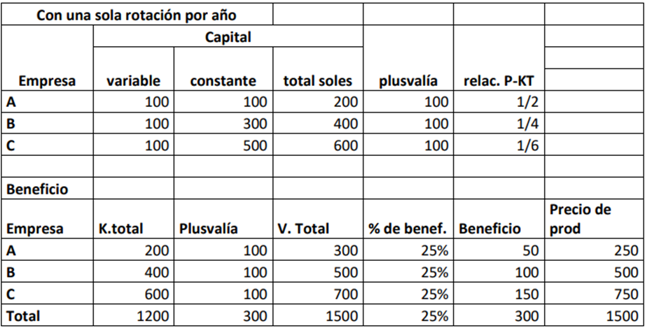

![]()
Econompia agraria y rural
La economía agraria
En sus inicios aplicó los principios de la agricultura van juntamente con la ganadería, que posteriormente es como una disciplina científica que se ocupó muy primitivamente, al convertirse en las necesidades de mejorar los rendimientos y la productividad se ocupó del uso de la tierra y los métodos para optimizar para la toma de decisiones de los productores agropecuarios.
Se presentan tres áreas:
El uso de la tierra (identificación del recurso tierra)
Los métodos usados para el uso de la tierra (herramienta o técnica que se usa)
La toma de decisiones (del productor agropecuario, agronegocios)
Adam Smith: consideró que la tierra como bien escaso genera una renta semejante a la de todo monopolio.
David Ricardo: que la renta es la porción del producto de la tierra que se paga al propietario por el uso de “las fuerzas originarias” del suelo y por tanto varía según la calidad y ubicación del terreno.
Carlos Marx: optó por distinguir entre la “renta absoluta” que resulta de la concentración de la propiedad de la tierra y la “renta diferencial”.
Henry Charles Carey: Cuestionó las tesis de Smith y Ricardo sobre la renta en cuanto que consideró que siempre habría disponibles tierras de calidad y tecnología que permitiera producir más. La alternativa al modelo europeo, el modelo estadounidense de tierras disponibles y proteccionismo
Johann Heinrich Von Thünen: hizo un aporte decisivo a la economía agrícola con su teoría de la localización, basada en el supuesto según el cual, si la actividad agrícola se pudiese concentrar, como la producción industrial se situaría cerca del mercado, enfatizando la importancia de la renta de localización, que, sin negar otros factores, postulaba como elemento más importante para configurar el territorio agropecuario.
Hoy el estudio de la geografía rural tiene en cuenta por una parte que una nueva ruralidad ha determinado la importancia de actividades no agropecuarias en el campo, como la minería y otras extractivas.
Teorema de la telaraña
Muestra la relación con la determinación del equilibrio en aquellos casos en que los ajustes son completamente discontinuos. Un campo de la economía agropecuaria es el de la especificidad de los mercados del sector. Al principio simplemente se estudió la aplicación de la oferta y demanda.
Según alexander chayanov: quien estudió la especificidad de la economía campesina, la organización de la unidad productiva familiar: sus objetivos y planes, la circulación de capital, trabajo y familia; las consecuencias de todo ello para la economía nacional e internacional y la articulación de la economía campesina con el conjunto económico. Contribuye a revalorar el aporte de los campesinos a la economía y explicar la heterogeneidad de las formas de producción agropecuarias contemporáneas. En uno de los libros menciona que el campesino tiene ventaja frente a otros, pero basado en la URSS (Socialismo) y defendía a la economía campesina.
Escala de producción
Los economistas aplicaron los postulados clásicos de economía de escala al sector agropecuario para predecir el triunfo de la gran producción en el sector, como en el resto de la economía, tan sólo limitada por la ley de los rendimientos decrecientes, o sea por la proporcionalidad en el incremento de los distintos factores productivos (en algún momento va a llegar a un punto de saturación y va a decrecer la producción)
Jacob Viner: concibió la agricultura campesina como uno de los factores de atraso que generan pobreza (mantener al campesino en esa condición es condenarla a la pobreza continua o sea a las siguientes generaciones). Viner comienza a notar sin mencionar como los efectos de la economía externa (capitalista) comienza a afectar a la economía campesina porque no se adapta a las exigencias del mercado por lo que estará condenado a la pobreza permanente.
Vandana Shiva: ha cuestionado todo el modelo de gran producción agropecuaria y el cambio tecnológico que lo ha acompañado, la revolución verde y ha contabilizado los costos ambientales y otros costos no pagados por los agronegocios, que al permitir el consumo gratuito de recursos garantizan una rentabilidad privada a costa de un enorme costo social e impacto ambiental.
La agronomía, también nombrada ingeniería agronómica, es la agrupación de conocimientos de múltiples disciplinas que dirigen la praxis de la agricultura y la ganadería.
El objetivo de la ingeniería en agronomía es conseguir una mejora en la calidad de las técnicas de la producción y el proceso de transformación de artículos alimentarios y agrícolas basándose tanto en fundamentos tecnológicos como en científicos y a través del examen de los factores biológicos, físicos, económicos, químicos y sociales que intervienen o perjudican el desarrollo productivo. El propósito de estudio de la agronomía es la transformación social del agroecosistema.
El problema económico se puede definir con dos afirmaciones corrientes
- En la que nosotros como economistas estamos enfrentados a las finalidades múltiples en competencia entre los que se debe de elegir en tal elección se debe renunciar a otras alternativas deseables (costo de oportunidad). Uno no puede ordeñar la vaca y al mismo tiempo venderla.
- No se puede obtener algo por nada, toda acción hacia la obtención de algo implica sacrificar algo, es decir, tiene un costo. No hay almuerzo gratis.
- Los recursos abundantes, que pueden obtenerse sin esfuerzo alguno, son bienes no económicos o libres, o gratuitos. Aquellos que son obtenidos con el esfuerzo humano, son bienes económicos. Que todo tiene un precio o un costo
- La búsqueda o consecución de estos últimos para satisfacer necesidades es lo que da origen a actos económicos. Y el encadenamiento y repetición sistemática de dichos actos es a lo que se le llama actividad económica. Aquí está la habilidad, la formación del profesional en economía para determinar las acciones correctas que se deben de ejecutar para satisfacer necesidades desde elegir el terreno hasta llegar al mercado (es encadenado).
- La enorme cantidad de bienes que la sociedad utiliza pueden clasificarse desde dos ángulos:
Según su naturaleza y según su función
Según su naturaleza, los bienes pueden entenderse:
Como el modo de ser de los mismos vistos con referencia al ser humano; pueden ser naturales, es decir no son producidos por los humanos; es decir, los seres humanos y sus facultades; y manufacturados, producto de la combinación de la acción de los seres humanos y los recursos naturales
Como la manera de ser de los bienes considerados en sí mismos. Con referencia a la manera de ser de los bienes, pueden ser materiales, o sea, con existencia física e inmateriales, o sea pueden ser productos de la mente (tiene mayor valor)
Según su función, los bienes pueden verse como:
Bienes directos, o de consumo, son aquellos que se destinan al disfrute inmediato. El aire y la luz solar, un paisaje natural, una fruta comestible, por ejemplo, son de este tipo en la medida en que satisfacen la necesidad de respirar, de obtener energía, de recreación, de alimentación, etc.
Bienes indirectos, llamados también factores de producción, los cuales se emplean en preparar la satisfacción de las necesidades, mediante la obtención, con ayuda de ellos, de otros que de modo directo la satisfacen: la lluvia, la energía solar, los minerales del suelo, la mano de obra, las máquinas y equipos, son de este tipo, en la medida en que ayudan a producir otros bienes.
Entonces si ya sabemos sobre recursos, elección, objetivos múltiples, y la idea de escasez, se puede definir la naturaleza y el alcance del campo de la Economía como: la Ciencia social que trata cómo los individuos, las empresas, el Estado y otras entidades de la sociedad asignan recursos en el marco de una situación de escasez caracterizada por el enfrentamiento de objetivos alternativos (es una definición de la economía).
Entonces la economía agraria implica la aplicación de la Economía a la agricultura; por lo tanto, se puede definir el campo de la Economía Agraria como Una Ciencia social aplicada que trata sobre cómo los productores, los consumidores y la sociedad usan los recursos escasos en la producción. procesamiento mercadeo y consumo de productos alimenticios y fibras. (no se estudia a la producción en sí sino analizar todo lo que hace el agricultor como y donde produce y vemos nosotros para quien produce (mercadeo es el más importante que la producción).
Es una actividad del ser humano llevada a cabo para producir alimentos y fibras (lana, seda, algodón) mediante el uso deliberado (no cualquiera lo hace) y controlado de vegetales y animales.
Economía rural
Tiene un objeto estudio más amplio que la economía agraria porque supera la visión de trabajo del sector, además que la unidad elemental de análisis ya viene a ser él hogar del trabajador. Se analiza las fuentes de ingreso de la familia rural o del hogar. La economía rural fue recientemente más o menos hace 30 o 40 años ha empezado a desarrollarse debido a la gran heterogeneidad social de la población rural o de los habitantes de las zonas rurales.
Influencia del lugar:
Sierra: probablemente sea mucho más itinerante. Pero si son cultivos que cosechan una vez al año, entonces los padres van a salir de ella para tratar de obtener ingresos por otras actividades que no son la actividad agraria. La migración de la fuerza de trabajo de los padres de familia del hogar, pueden ser prolongados. El poblador rural además de su actividad agropecuaria puede ser un comerciante puede ser un artesano o puede salir a la ciudad a ofrecer sus servicios o de repente ofrece servicios de transporte de carga y son varias las fuentes de ingreso que va a obtener para el bienestar de su hogar.
Costa: puede ser mucho más sedentario porque las fuentes de ingresos son diversos en los hogares según incluso tipos de cultivo que si son cultivos permanentes el lugar va a ser mucho más estable, no se va a mover mucho siempre va a estar el lugar más íntegro.
Además de incorporar en este análisis, el surgimiento o la aparición y el desempeño de las instituciones agrarias tanto privadas como públicas la economía rural influye en la participación de organismos públicos. que acuden en su apoyo o puede y no colabora con actividad que normalmente ocurre, por ejemplo, con la Dirección Regional Agraria se limita a entregar mangueras a enviar un par de técnicos agropecuarios a ver.
¿Qué es economía rural?
La economía rural, tiene un concepto más amplio del sector, porque ya la unidad de análisis ya viene ser el hogar del trabajador en el área rural, como un subconjunto de la actividad económica, pero no deja de analizar la economía agraria, incorpora el comportamiento y cuáles son los ingresos del área rural. Ha empezado a desarrollarse gracias a la heterogeneidad, un comportamiento diferente según su grado de influencia, en el ambiente en el cual se desenvuelven, en la sierra itinerante, costa más sedentaria, porque los ingresos varían, según el tipo de cultivos, si rotan rápidamente, o solo si es una cosecha al año, los padres salen para obtener más ingresos, para su bienestar familiar. De modo que el hogar se fracciona. La economía rural incorpora el comportamiento, el quehacer diario y las fuentes de ingreso de la familia rural. Fuentes de ingreso, tamaño de la tierra. Analizamos al actor principal que es el hombre, la pobreza, la transferencia del área rural al área urbano. Educación del poblador. Análisis de derechos humanos.
Ingreso obtenido por los habitantes en la zona rural en las diversas actividades ejerce.
Consideramos cómo es que la pobreza y la desigualdad son indicadores casi universales para gran parte de la población.
Relacionar los ingresos y la falta o la seguridad alimenticia que hay en el área rural como parte de la pobreza y la desigualdad.
El acceso a bienes y servicios públicos como la salud y la educación hasta qué punto es cercano al poblador rural.
Como efecto de la falta de salubridad en su alimentación o la falta de educación, desnutrición, anemia.
La economía rural ha empezado a desarrollarse debido a la gran heterogeneidad social, comportamiento diferente según el grado de influencia de acuerdo con el ambiente en el cual se desenvuelve.
Las fuentes de ingreso son diversas, según tipo de cultivo.
El hogar será más estable e íntegro, pero si son cultivos que rotan rápidamente y si es cosecha solo 1 vez al año, trataran de cambiar
Múltiples determinantes de bienestar van a influir, la migración de fuerzas de trabajo será prolongados hasta ejercer la actividad rural
Tal Vez con un poco más de detenimiento, economía rural lo hubiéramos llamado así
Las diferentes fuentes de ingreso del trabajador del área rural.
Procesamiento
Mercadeo
Consumo
De la actividad agraria
Factor hombre
Además de agricultor, puede ser comerciante u hacer otra actividad.
La economía agraria
Es un acto deliberado controlado de los vegetales y animales, un poco juntando sería pecuario, sería Agropecuario. Esferas de la producción, el mercadeo, solamente agropecuario.
Manejo el forestal por eso se amplía su aspecto, porque su campo de acción de amplia aún es restringido porque no considera el análisis del agricultor, allí ingresa el concepto de economía rural.
¿Qué es la actividad agraria?
En la actividad agraria nos referimos solo al sectorial los productores y consumidores, procesamiento y mercadeo, pero de la actividad agraria, no incluimos a la actividad hombre.
¿Cómo es que la pobreza y la desigualdad son indicadores?
Los ingresos que son bajos ponen en riesgo la seguridad alimentaria que debe tener la población, pero no cuentan con los recursos para satisfacer sus necesidades básicas.
O esperamos sentados en nuestros escritorios, la educación se vuelva en igualdad de condiciones, ya sería suficiente, la equidad es totalmente distinta, la calidad de vida se tiene que analizar. Castillo dijo que enviaría un médico por cada habitante, entonces sería un gran avance, para que se desenvuelva en igualdad de condiciones, la equidad del poblador rural es totalmente distinta, la calidad de vida hay que caracterizar con la lupa de la caracterización.
¿Cuáles son las enfermedades comunes, efecto de la mala alimentación y de educación, generando mayores niveles de desnutrición, de anemia, porque no tiene los hábitos suficientes de higiene?
Atreves de la afección intestinal, lo va a votar, de que las capacidades deben ser mayores en el área rural. En relación con el área urbana, hay área rural donde más prima las diferencias. En cuanto a la ley sobre derechos urbanos, no se debe generar expectativas que no existen, deben considerar más que solo tienen derechos y no obligaciones, ellos estaban haciendo la minería, más conocen sus derechos que sus deberes.
Derechos de territorio, las tierras de minería, esa era nuestra chacra y allí vivíamos, deberíamos incorporar en el análisis rural, que influyen al sector agrario y cuanto dependen de la agricultura y cuanto de la minería.
Los derechos humanos bien entendidos, deberían incorporar las obligaciones.
La economía rural es más grande que la economía agraria.
Porque en agraria solo se ve la producción y mercadeo de agropecuario, en la rural se considera además de todo a la familia, allí tocamos los niveles de ingreso, la elección o estrategia que toma para generar fuentes de ingreso, la tierra, la pobreza, la desigualdad, transferencia de riqueza, la calidad de vida del poblador, allí se ve la riqueza de análisis, de derechos humanos en las comunidades.
Las direcciones Regionales Agrarias, tratan de implementar una economía rural, sin embargo, su actividad es muy limitada, el enfoque no refleja la necesidad del área rural, puedo decir que si mañana, a partir del día de mañana no existe la DRAA, ¿afectaría a los productores agrarios en algo?
Tal vez para trámites de certificación o para el registro de propiedad en SUNARP. O lo sacamos de COFOPRI de catastro Rural, ya no lo llamamos, de servicio de titulación de tierras de Ayacucho. No le afectaría mucho al trabajador, tenemos una institución muy burocrática.
A veces más se le ponen obstáculos al agricultor. O mejor darlo al campesino, la moto es para 5 años y le haga mantenimiento.
Es bueno saber que la DRAA debe apoyar al sector agrario, los que van al rural o derecho de paso, o el pago por daño o desastres en realidad le llega a la gente que no le corresponde, y se queda con los funcionarios con DNI falsos.
Sería buena si es mejor diseñada y que realmente esté dirigido al AGRO, sobre la posición de necesidades, de traer información real, de acuerdo con ello crear estrategias. Se convirtió en un vaso envolvente o todo lo que llega a ese recipiente el 80% se queda en la burocracia y solo el 20% se le da a los afectados en la DRAA.
Un director regional, cómo obtiene la información estadística, saca una muestra, solo unas cuantas hectáreas.
La agricultura y el desarrollo
En la actividad agropecuaria es importante el estudio de los efectos del rápido crecimiento de la población, entendiendo que debe afectar al desarrollo integral del país.
¿Qué consecuencias o cómo afecta el aumento de la población en el área rural al conjunto de la economía?
En países en desarrollo se da una combinación de alta tasa de fertilidad con bajas tasas de mortalidad.
Estas altas tasas de fertilidad significan que debe destinarse más recursos naturales a la agricultura, solo para lograr satisfacer los mismos requerimientos de alimentos. Por cabeza va a aumentar el grado de satisfacción, asignando cada vez más recursos.
Si son 10 personas en el área rural y aumentan a 15 personas, para 10 a un pan era ahora tendría que ser 15, y sigue considerándose un pan por cabeza. Allí sí se mejoraría la condición de vida del poblador rural. Esto pone en desventaja frente al área urbana. El crecimiento demográfico es mayor en el área urbana. Sacrifica más recursos, menor calidad vida, menores ingresos, pese a que se puede atender con más recursos.
El crecimiento rápido disminuye el crecimiento global de la economía.
Debemos decidir eficientemente ¿cuál inversión? ¿Cuáles son las prioridades y en qué condiciones se va a determinar estos rendimientos o crecimiento? ¿Inversiones Estratégicas?
En la década de los 90, se implementó una política de control de natalidad a la mujer que tiene muchos hijos se les ligó (Ligadura, vasectomía).
A los 28 ya tenía 6, su nivel de ingreso era bajo, y tenía 6 hijos, sacrificando 6 vidas para el futuro.
Y lo que paso que solo tenían 1 hijo y lo ligaron, allí las enfermeras y los médicos tenían que cumplir metas para que sea efectivo
En el área urbana, se quedan con sus hijos. Hay un control la población está aprendiendo
Ahora crecemos a 1%, ya hay un control. Tomar en cuenta la información femenina y masculina, los nacimientos por año. Los nacimientos por día.
Los médicos tienen que elegir entre una mamá y un hijo. Y salvan a la mama.
El sector salud se está relajando, arrinconamiento de la actividad. Cuántos van del área urbana al área rural
Crecimiento poblacional de Ayacucho
Migración del campo a la ciudad, si esto afecta en el pbi de Ayacucho
Población y producción
El valor de la producción y migración
Palta
Plantones trajeron de Ica, y están produciendo 4000 toneladas de paltos.
100 platos es una yugada, pueden sacar 2 toneladas a 3 toneladas de palta 5000 dólares – 18 mil dólares por año
Manejo técnico
Gestión pública he estado, recién empezó como docente y producir
Abono foliar
Grupo de contenedores lo han devuelto al Perú
Mi hermana tiene 25 hectáreas de paltos, elegir al exportador, un empresario grande
Fumigar con insecticida, Mario esta bonito, agarramos planta por planta hizo sacar mi hermano, 360 plantones, no ven a un agricultor en su zona, aprenden con el ejemplo y demostrar, si se puede o no.
Había una hectárea de palta que se malogro, por mucha insecticida y él lo eliminó todo para que no contagie a los demás.
El uso de agua en la producción de palto, si ahora estás preocupado en la producción de agua o siembras palto.
Cuando los pobladores no ven un agricultor exitoso, entonces solo aprenden con el ejemplo. El agua es un problema fundamental. Chile ya no tenía agua para su consumo, por el sembrío. En Chile están con la regionalización de la población. Preocupación del uso de agua. Aprovechas ahora y siembras palto sin importar.
Los noticieros sacan informes completos de Alemania, Francia, información convincente, manejar más información debería ser, hablando de desecho de animales. Un producto que estaba prohibido hace 5 años, pero un grupo nos querían vender a nosotros, Perú fumiga anualmente. Yo lo dejé así, y en el comercio salió una noticia y hablaban de que podríamos fumigar por muchas razones y tenemos una conferencia de medio ambiente. Y no siguió porque era tóxico.
Problema de la población para el sector agrícola
Es explicado en términos de tasa de crecimiento en su número o en su densidad, cuan disperso es para ver lo que el área urbana le puede brindar. En promedio en Ayacucho, el tamaño de la tierra es 0.75 por persona, el problema fundamental del agro es el tamaño de la tierra.
Entonces no es un problema como dijo Malthus, la gente geométricamente y la comida aritméticamente, ver la densidad. En mayor porcentaje creció la producción mundial y los ingresos, conforme lo que tenemos un problema de distribución porque el incremento del ingreso y de la producción creció en la zona urbana en las ciudades y los precios si regulan los precios en el consumo, en países como el nuestro, tendremos problemas en la producción.
No permite una inversión de capital, en el LP, podría reivindicarse a Malthus, de aquí a muchos años cuando estemos saturados, tal vez tengamos mucha población y no haya tierras para la actividad agropecuaria.
El problema de la población de aquí 100 años, tenemos más personas en el mundo y no tenemos tierra para la actividad agropecuaria, de repente con una pastilla comemos todo, tenemos problema de distribución, dado la población que está dedicada a la actividad agropecuaria.
El petróleo es el más contaminante de lo que sacan del petróleo y nos inundaron a todo el mundo con contaminación, los grandes intereses que existe en el mundo. Y los agricultores solo tienen sus vacas y dicen que prefieren tener y porque no cierran a esas grandes empresas que generan más, como cuando extraen petróleo.
Sin crecimiento no hay desarrollo, desarrollo si necesita de crecimiento.
Podemos decir que el desarrollo significa crear condiciones para la racionalización de la actividad peruana.
Desarrollo significa crear las condiciones para la realización de la personalidad humana. Por tanto, es posible que un país alcance un crecimiento económico, sin que alcance un nivel mayor de desarrollo.
Puede haber crecimiento, pero no desarrolló, puedo estar sembrando más, pero no por eso se ha desarrollado la actividad, crece la disponibilidad de recursos, pero eso no dice que hubo desarrollo, con la misma extensión produzco más eso si es desarrollo, con maquinarias y equipo, canales de distribución, más conocimiento, más educación.
Mano de obra oportuna, tal vez tienes escasez, pero fuera hay mano de obra desempleada, a eso se le llama, desequilibrio laboral, los trabajadores no están informados de las oportunidades de trabajo. Podemos analizar la Oferta de Mano de Obra.
Palta
Para la cosecha trae 20 trabajadores, yo tengo que ir a coger lo que dejan, con mis 3 o 4 trabajadores que tengo.
Quiero 10 y suben.
Mano de Obra siempre hay disponible no siempre en localidad sino fuera.
Desarrollo es más amplio que crecimiento económico.
Desarrollo significa crear condiciones las condiciones para la realización humana, dirigido a la persona al grado de satisfacción, puede que el país tenga crecimiento, pero no desarrollo, no es efecto del incremento de la productividad, generalmente viene acompañado del desarrollo y de la reducción de la pobreza, porque con el mismo tamaño se produce más, podemos trabajar con mejor mano de obra, mejor tg, mejor uso de recursos.
Ejemplo cuando está llena la olla, y se saca el agua con jarra hay desperdicio de recursos.
Crecimiento económico es la realización de la personalidad humana es posible considerar para su análisis, indicadores importantes que nos puedan decir si hay cambios o no en el nivel de vida de la población.
Indicadores de pobreza
La PROPORCIÓN de las personas que viven debajo de algún nivel de pobreza definido. 2\(x familia, debajo de 1.5\)X PERSONA está en extrema pobreza. Pobre es aquel para nosotros menor 3$, tienen niveles de ingresos mucho más altos, pero se consideran pobres de acuerdo con lo mencionado, nivel de vida distinta.
LA TASA DE DESEMPLEO: Se tiene mucho desempleo, hay una gran cantidad de población que no tiene ingreso. Ejemplo: Ica tenía 0% de desempleo, aun cuando el salario era 35 soles, todo el mes estaba ocupado el trabajador. En Ayacucho 40 soles, una semana al mes trabaja, esa mano de obra de Ica es más productiva. Chaqcha, comida, agua.
LA DESIGUALDAD DEL INGRESO: Cuán amplia es la diferencia del ingreso del pobre y el rico, cuando más amplia es la brecha, la pobreza es mayor. No es evitar que el rico que crezca más, pero esos ingresos se acerquen o aumente más, aun cuando se aleje, aumente en el mismo sentido, lo que genera es el empleo. Empresas de mandarina, paltos, etc.
DESERCIÓN ESCOLAR, No tendrán el mismo nivel de oportunidades de los que sí fueron a las universidades.
DERECHOS CIVILES Y CONSTITUCIONALES: Como ve su participación en los derechos civiles, conocen sus deberes.
Van a representar una mejora y para tener derechos cumplió con muchas de sus obligaciones. Los servicios están a su alcance. Sabe que puede ir a la Municipalidad y puedan poner alumbrado público, canal de riego.
TASA DE DESEMPLEO
NIVELES DE INGRESO
AMPLITUD DE DESIGUALDAD
DERECHOS CIVILES INDIVIDUALES Y GRUPALES
JUSTICIA
PARTICIPACION CIUDADANA
PARTICIPACION CIUDADANA En las instituciones políticas y sociales, que requieren juicios de valor.
VER LA SOCIEDAD EN QUE VIVIMOS
Ayacucho debe tener calles sin huecos, ni inclinamos.
¿En el VRAEM están mencionando que crearán una Universidad Autónoma, pero para cuando se podrá hacer eso?
Para eso se debe crear infraestructura, estudio, hay la suficiente intensidad poblacional – demanda del VRAEM, ¿un profesor universitario puede ir con la misma remuneración? O hará otro mamarracho. La ley tiene que cumplir una serie de requisitos. ¿Cómo se podría lograr eso? Sobre lo hecho se puede hacer.
FALACIA, es una mentira que parece verdad.
¿Qué pasaría si en el VRAEM empiezan a vender legalmente la coca?
Producir más, probablemente suba el precio por un tiempo o tal vez baje por el exceso de oferta, pero nadie hizo un enfoque social, ósea se Volverá tierra de nadie, donde el sicariato y asesinato se expandirá a diestra y siniestra, Ayacucho sufrirá los efectos, seremos tierra de nadie, hablando de seguridad. Allí la población se vuelve altamente vulnerable. El narcotráfico genera inseguridad.
En Tarapoto, el Arroz salvo de todo a este lugar, se reconvierte a otro nivel de producción.
ONGs atacaron a muchas empresas de esta zona, a una que invirtió 7 mil millones de Cacao, le pusieron juicio con orden de captura, con daños al medio ambiente. Y la empresa se fue. La meta era producir el mejor cacao del mundo.
Con el narcotráfico controlado hay ya eso. Por avión van poco pero más por barco.
El desarrollo como concepto ideológico
El desarrollo es un concepto ideológico, que implica metas, como la distribución del ingreso, porque para mí, me interesa que haya ricos y que se reduzca a los pobres, la clase media, la distribución del ingreso es que yo quito a todos los ricos y lo distribuyó a los pobres y en el tiempo todos seriamos pobres y seriamos iguales en la pobreza, la justicia es ideológico.
Mejorar el sistema de justicia, todos tenemos que estar juzgados en las mismas condiciones. Una ley que todo postulante a la magistratura no deben ser abogados en menos del quinto superior. Entonces cuál abogado ya no es fiscal, ahora cualquiera, los peores son ahora.
Los jueces sacaron a su favor las leyes. Aquí analizamos cómo se da el desarrollo y los factores que influyen en la pobreza, que afecta a la población en su conjunto.
Se tiene que ver detrás de lo que normalmente se ve. ¿Qué viene detrás? Leer las consideraciones de la ley, es la razón por la que sale la ley. A los profesores les aumentan el sueldo en vez de eso deberían darles diplomados o cursos para que ellos se capaciten y mejoren la calidad de educación.
Hay que hacer que la gente participe en una visión, porque cuando Castillo fue a la selva sólo estuvieron sus funcionarios y no había representantes de las comunidades Ashánincas.
Los juicios de valor se deberían dar acerca de la naturaleza de una sociedad adecuada. Imaginándome cómo se desenvuelve la sociedad en su conjunto, acompañado con todos sus males, previamente con sus actividades de todo tipo.
Los valores son muy importantes y ver las condiciones que tenemos como sociedad.
En armonía al que hacer con la población por eso es siempre el factor ideológico del que prima. El progreso de los derechos civiles individuales.
Crecimiento y desarrollo
- Concepto ideológico que implicaba metas principalmente en la distribución del ingreso
- debe haber metas en la justicia
- incorporación de la participación de la población dentro de las instituciones políticas y sociales y que en conjunto el desarrollo económico requiere de los juicios de valor; ósea pareceres que permiten visualizar una sociedad desarrollada, el cómo consideramos la población de una determinada área geográfica o un país que debe ser un país desarrollado y como imaginamos una sociedad adecuada para el desenvolvimiento con bienestar de la población.
- la medición del bienestar de la población es bastante subjetivo, se puede medir a través de ciertas escalas; por un lado, tenemos:
- el nivel de vida mínimo, el nivel de vida mínimo es sinónimo del nivel mínimo de consumo (consumo autónomo)
- nivel de pobreza, a medida que aumentan los ingresos podemos decir que después del nivel mínimo de consumo estamos en un nivel de pobreza, ya hay un nivel de consumo
- Nivel de consumo, la población ya tiene algún nivel de vida (nivel de vida relativamente baja)
- El estándar de vida, ya es parte del bienestar de la población, podemos relacionarlo con el ingreso como el estándar de consumo (sin tantos flujos, pero sin problemas).
- debemos relacionar el nivel de vida con el nivel de consumo
INDICADORES NO MONETARIOS DE LA CONDICIÓN HUMANA.
- El índice físico de la calidad de vida (IFCV), indicador que toma en cuenta la mortalidad infantil, la esperanza de vida y el nivel de alfabetización
IFCV=((MI+EV+NA) /3)
MI= MORTALIDAD INFANTIL, EV= EXPECTATIVA DE VIDA, NA= NIVEL DE ALFABETIZACIÓN
- estos indicadores en tanto sean más positivos van a significar que el país tiene un bienestar mayor cada vez que se mida en relación con otros años, si es que ha mejorado, pero podríamos tener indicadores negativos.
El cambio en la demanda de los consumidores y el crecimiento del ingreso
Para alcanzar la demanda creciente se debe ver la tasa a la cual el sector agrario debe crecer, para cubrir la demanda existente en el mercado debemos saber a qué tasa crece la población para incrementar la producción agropecuaria.
Que hacen los consumidores con el incremento de sus ingresos.
Crecimiento gradual del ahorro de parte de la población, de las economías de mercado el ingreso neto obtenido por las personas comúnmente abarca un porcentaje relativamente alto en cuanto a consumo se refiere.
Patrones de consumo con el crecimiento económico.
- Debemos analizar qué cambios sufre a medida que crece el ingreso los hábitos de consumo de la población.
Cambios en los gastos de consumo
alimentos, siendo la prioridad principal los alimentos en los países con bajos ingresos se destinan un mayor porcentaje del ingreso al consumo de alimentos y bebidas, en tanto en los países con mayores ingresos, los países más avanzados el porcentaje destinado al consumo será menor.
vestimenta, tanto en los países con altos ingresos como en los países con bajos ingresos se destina casi el mismo porcentaje de los ingresos.
Vivienda, los países con altos niveles de ingreso destinan un mayor porcentaje a lo que es vivienda en tanto que en los países menos desarrollados los ingresos en vivienda son en menor porcentaje.
salud, Transporte, Óseo, otros; en los países con mayores ingresos la población destina gran parte de sus ingresos al cuidado de su salud, compran vehículos para su transporte, realizan viajes, comen fuera de casa, etc. destinan un mayor porcentaje.
Cambio en la proporción del gasto en alimentos
Cambio en la proporción del ingreso gastado en bienes de consumo y servicios conforme crece el ingreso per cápita.
Como el cambio en los niveles de gasto en bienes y servicios se da conforme crece el ingreso per cápita.
Necesidades nutricionales y demanda económica de alimentos cubre nuestro producto.
Demanda efectiva.
Demanda creciente de alimentos y productos agrícolas
Debe de tener en consideración:
La tasa de crecimiento de la población y la tasa de crecimiento de la demanda de alimentos · asumimos que los gustos y preferencias del consumidor no han cambiado (curvas de indiferencia)
La tasa de crecimiento en la demanda de alimentos considerando:
D=p+g*n+he
Donde d= demanda, p=tasa de crecimiento de la población, n=elasticidad ingreso, g= tasa de crecimiento del ingreso, h= tasa de crecimiento del precio, e= elasticidad precio.
La agricultura en el desarrollo económico
Debido a que el crecimiento económico requiere un incremento más rápido de los sectores: industrial y servicios. Los planes y las inversiones para el desarrollo nacional se han centrado en los sectores no agrícolas. Contribución de la agricultura a otros sectores:
El incremento de la producción de alimentos y otros productos agrícolas para uso del sector urbano doméstico y la exportación.
La oferta de fuerza de trabajo adicional a los sectores no agrícolas.
El flujo de capital neto hacia afuera para ser invertido en otros sectores.
Incremento de la demanda del consumidor del sector agrícola para los bienes y servicios productivos por otro sector.
Contribución de los otros sectores a la agricultura.
La industria contribuye con la agricultura ofreciéndole insumos mejorados, tales como nitrógeno, fertilizantes, pesticidas, maquinaria y equipo, bombas de riego, mangueras, producción industrial, etc.
Mayor demanda de alimentos y otros productos agrícolas a partir del incremento del ingreso.
Migración importante de la fuerza de trabajo agrícola hacia sectores agropecuarios.
Provisión de infraestructura a la agricultura con caminos, equipos de transporte, educación, comunicaciones entre otros.
El capital humano y el proceso de conocimiento que genera la ciudad, entonces la ciudad cumple su función en el desarrollo agropecuario con el capital humano y con el conocimiento que genera como son las universidades. Distribuye su rol en el desarrollo agropecuario.
El capital humano y el desarrollo agrario
El conocimiento, porque tiene diversas especialidades en un mismo cultivo. Ej.: tipo de terreno, selección de semilla, profundidad de la siembra, la curación, el proceso de cosecha
Formas particulares de tecnología, la tecnología del producto, de la comercialización, social o institucional.
Mayor nivel de educación y mayor entretenimiento. La agricultura necesita mayor inversión en capital humano.
El sistema de investigación y las universidades se deben adaptar a la agricultura
Los derechos de propiedad es parte del conocimiento y formación del agricultor que debe de tener seguridad jurídica.
La salud de la persona.
A mayor salud mayor productividad.
Mejora de las capacidades de los niños para absorber habilidades cognoscitivas en la educación.
El estado nutricional afecta directamente al capital humano en el área rural.
El tamaño de población, el tamaño de la población en el área rural cada vez es menor y la productividad debe de ser más, pero dada esas limitaciones la actividad agropecuaria reduce sus rendimientos.
Las características del capital humano del área rural es que genera flujo de ingresos en el tiempo a las ciudades (el capital humano es reproducible).
Se puede alterar el stock de capital humano haciendo inversiones tanto en calidad como en número.
El capital humano tiene la capacidad de restaurarse y esto solo se logra a través de la capacitación.
Inversiones en investigación agrícola
La nueva tecnología de la producción incrementa la productividad. Ej.: investigaciones en mejoras tecnológicas en cuanto a maquinaria y equipo va a hacer que aumente la producción y por ende aumenta la productividad (la investigación en tecnología podría servir para adecuar la maquinaria y equipo a la topografía) (variedades mejoradas, tractores, equipos, etc.)
La producción y distribución de la nueva tecnología extiende los beneficios del crecimiento económico de la sociedad a favor de los agricultores.
Arreglos institucionales
Se refiere a las instituciones públicas relacionados al sector agrícola; ósea ¿cómo están organizadas las instituciones públicas para la atención a la actividad agropecuaria?
El diseño de políticas se ha sesgado a favor de otros sectores y no a favor del sector agrícola.
El sector ha contado con muy poca gente que articule y defienda efectivamente al sector agrario en los órganos de gobierno.
Los ministros del sector tienden a no apoyarse en gente competente que priorice al sector.
discriminación al sector agropecuario en la parte presupuestal.
Visión y misión
Visión: “sector que gestiona la mega biodiversidad, líder en la producción agraria de calidad, con identidad cultural y en armonía con el medio ambiente” “el Perú cree ver un agro próspero, competitivo e insertado al mercado nacional e internacional, a través de la productividad y la calidad de sus productos agroalimentarios”
- el objetivo estratégico sectorial del ministerio de agricultura es elevar el nivel de competitividad del sector considerando el desarrollo sostenible
Misión: “diseñar y ejecutar políticas para el desarrollo de negocios agrarios y de la agricultura familiar, a través de la provisión de bienes y servicios públicos de calidad”. “diseñar y ejecutar políticas para el desarrollo de negocios agrarios y de la agricultura familiar, a través de la provisión de bienes y servicios públicos de calidad”.
Teoría de la empresa
Elasticidad precio de la demanda (elástica, unitaria, inelástica), Elasticidad ingreso (lujo, normal, inferior), Elasticidad cruzada. (dQx/dPy X Py/Qx), por ejemplo, si consumimos papa y suponiendo que los precios son bastante altos, podemos sustituir por el maíz, la gente puede migrar al consumo de maíz.
La palta no tiene un sustituto cercano, entonces depende del mercado, principalmente se tendrá que considerar la elasticidad de precio, cuanto mayor es el ingreso aumentará la demanda de palta. El productor tiene que adaptarse al mercado, y no así el mercado al productor.
El uso de agua debe ser pagado, para hacer mantenimiento, en las partes altas hay suficiente agua, pero no somos capaces de hacer canales de riego e instalar mangueras, sino se espera la inversión del estado.
Los pequeños y medianos agricultores en su gran mayoría lo que quieren es todo del aparato estatal, tienen una tendencia de dependencia del estado. La educación que tenemos no está hecha a nuestra realidad, y la enseñanza es estatista, o sea nos enseña todo dependiendo del estado.
Teoría de la oferta
La agricultura es descentralizada porque consta de varios procesos. La agricultura es oportuna y se tiene que sembrar en el tiempo adecuado. Más del 30% se dedica a esta actividad. Diversas estructuras empresariales (cooperativas, medianos propietarios, etc.), tenemos que homogeneizar estas estructuras. Se desenvuelven en diversas condiciones climatológicas (Perú 48 de las 108 zonas ecológicas). No se puede hacer políticas únicas para el agro sino políticas para cada uno de la población. Depende también de factores no controlables (plagas, clima, etc.)
Características de la oferta
Estacionalidad: En Ayacucho no se cuenta con estaciones en el año.
Dispersión: en Ayacucho cada terreno está muy separado.
Riesgo e incertidumbre: Por el clima, la plaga, genera altos costos para cada productor.
Integración de la producción con la economía familiar: en la sierra más integración que agro.
Presencia de externalidades: las plagas serían menos costosas si entre todos las eliminan.
Intervención del estado: el estado no tiene que intervenir sólo regular.
Las empresas exportadoras ya no confían en el productor, y mucho menos en el pequeño productor, porque las empresas exportadoras se aseguran la calidad. La exportación de palta es agroindustria, la palta es resultado de agricultura, pero cuando la palta sale del Perú en los contenedores ya es agroindustria, porque pasa por un proceso, lo lavan, lo preparan para que llegue a su destino en condiciones impecables, entonces ahí hay un valor agregado.
Si los pobres no quieren que lo ayudemos es imposible que nosotros le saquemos de la pobreza y extrema pobreza, por eso importante la participación de los antropólogos, sociólogos, antes de que ingrese los ingenieros, economistas o estado, es multisectorial, tiene que ingresar los antropólogos, a conversarlos de la necesidad de su activa participación.
Se invierte en Lima y no en Ayacucho por el mercado, además Ayacucho no genera utilidad, no permite obtener utilidad alta, entonces también no hay condiciones para generar inversión.
La industria y el campesino
El capitalismo se desarrolla más en la industria y en la ciudad. El agro se desarrolla en el área rural y es autosuficiente. El campesino antes tenía todo, pero ahora recurre al mercado. El campesino necesita dinero, entonces vende sus productos. La división de trabajo era débil por eso la industria urbana supera a la rural. La máquina sustituye el salario no la mano de obra. El servicio militar hace que los jóvenes migren del campo a la ciudad. La producción artesanal rural es reemplazada por la urbana porque tiene menores costos de producción (ruina de los pobres). Hay lugares en los cuales la producción artesanal es más cómoda que la industrial. La artesanía no es fuente de enriquecimiento. La industria desplaza a la artesanía.
Para cerrar la brecha de agua y saneamiento necesitamos más o menos 14 millones de dólares, para eso debemos hacer proyectos reales sin sobre valuamientos, con costos reales. Esto debemos cumplir a mediano y largo plazo.
En transportes podemos hacer ferrocarriles, carreteras, aeropuertos, mejorar la condición de aeropuerto de Cusco, si los barcos grandes entrarían por Chincha los precios de los productos bajarán. Necesitamos más puertos para que entren más barcos al país.
Ayacucho no tiene desarrollo industrial porque no creamos las condiciones necesarias para la inversión. Los factores de producción son la tierra, capital, mano de obra y capacidad empresarial, de esto lo más importante es la capacidad empresarial, porque es el que junta los demás factores, la mano de obra sin dirección no sirve para ser utilizada en la producción. sí entendemos eso, viene la inversión, generamos la condición.
Panorama del Perú a nivel mundial
El desplazamiento de fuerzas económicas, políticas sociales va a afectar definitivamente el pbi mundial, en América Latina tenemos qué ver cómo se va a mover está correlación de fuerzas.
sí bien el Perú fue ejemplo para todos los países de américa latina Porque tenemos una disciplina fiscal en cuántos al manejo del tipo de cambio y los diferentes sectores, a pesar de no ser un país industrializado teníamos años de crecimiento que estaba por encima de la tasa crecimiento de otros países de América Latina, en la actualidad El Perú está en una situación difícil pero también el resto de los países de américa latina está en la misma situación.
Más bien debe ser parte de una gran preocupación porque seguramente América latina va a quedar en una redistribución de la correlación de fuerzas de acuerdo con su grado de importancia, dado que Perú y Chile están en una situación distinta al resto ya pasaron por ciertas etapas similares o de incertidumbre.
Del lado chileno no se está dejando respetar la propiedad privada y una de sus propuestas es mejorar la redistribución de los ingresos, no olvidemos que a pesar de que el Perú estaba en una situación económica mala los ingresos promedio de aquellos trabajadores Pobres o de la clase media estaban encima de Los ingresos chilenos, la concentración de riqueza en el Perú es mucho mayor, esta situación por parte de chile es porque enfatizaron en la exportación y descuidaron al mercado interno.
saliendo de américa Latina China, India están tratando de liderar el mercado internacional incluso teniendo problemas como la de China que entró en una recesión y la India qué tiene problemas de sequía, India redujo sus exportaciones lo que conlleva a qué suba el precio del trigo y sus derivados, si no se toman medidas atenuantes en este caso subirán los precios también en el Perú esto será difícil porque la disponibilidad del presupuesto ya no es la misma, se ha estado gastando en bonos, en incremento de sueldo de algunos sectores Por lo cual el presupuesto ya no es tan flexible y recordemos qué estamos en el primer semestre.
Estados unidos que tenía una trayectoria ascendente en su crecimiento, ahora tienen tasas de inflación altas, elevaron la tasa de interés de referencia para reducir el impacto de los precios, incrementaron las cuotas para importaciones esto beneficiaria a los países que se enfatizan en la exportación a ese país, debido a la guerra en ucrania tendremos que ver el efecto del comportamiento de EE.UU en américa latina y en espacial el Perú, cuando las tasas de interés referencial entran en vigencia así aunque tengamos los dólares que tengamos el precio del dólar subirá, esto porque va empezar a retornar los dólares debido a la tasa de interés.
El costo de transporte marítimo se cuadruplicado en algunas zonas esto afectando a las exportaciones e importaciones, esto nos afectara debido a que tendremos un déficit en recaudaciones y la SUNAT probablemente en los próximos meses comience a apretar más los bolsillos de la población que tiene ruc, esto significa una reducción del crecimiento y un mayor nivel de informalización.
El BCRP está controlando la tasa de inflación, pero poco o nada puede hacer si la situación en el exterior sigue agravándose y la inflación es de todos los países, al lado de esto afrontando políticas fiscales expansivas poco responsables.
México, Brasil están capitalizando, pero están teniendo problemas en la producción debido a que las empresas inversoras que invierten en esos dos países también invertían en Rusia, teniendo fábricas en ese país, las cuales pasaron al gobierno de turno o fueron expropiadas.
América latina va a tener un impacto muy fuerte del comportamiento del exterior que todavía tienen un destino incierto, esto afecta al tipo de cambio y las medidas tienen que ser las correctas para poder mantenerla.
Hipotéticamente si Petroperú estuviera al 100% de su capacidad evitaríamos un poquito la situación del país, pero esto no es así e incluso si se diera el caso de ello seguiríamos dependiendo del exterior esto por la demanda insatisfecha existente.
Rotación trienal
Es la relación entre el compromiso entre la propiedad comunal de la Tierra y la propiedad privada, en las comunidades exige el pastoreo y la propiedad privada del suelo y corresponde a las necesidades del campesino.
comunidades antiguamente eran cerradas economías que se podían abastecer Y con el avance de la economía mercantil es imposible como resultado de la presión de la globalización la rotación
La rotación trienal viene el sistema de cultivo de tres hojas, Esto sería la Tierra arable tenemos una tierra cultivable, También tenemos la actividad de la cría de ganado y el cuidado de pasturas.
- tenemos para la agricultura cultivables
De uso personal eran repartidas a los comuneros, Estás también se dividían en tierras en descanso las cuales se creían que después de 7 años tenía que rotar el cultivo Y recuperada su fertilidad restricción que con tecnología Gil podría dejar detenerse las tierras en descanso, pero claro eso pasa por los recursos con los que cuentan los comuneros También tenemos los Prados y bosques comunes qué forman la totalidad de las tierras cultivables
- tierras para la ganadería
este tipo de tierra era para uso común
- los pastos de uso común.
de uso común, los cultivo para los comuneros era de uso propio, pero al terminar la cosecha los pastos siempre y cuando eran del mismo tipo de cosecha eran para todos o de uso común
la industria o la producción urbanas y el comercio estaban representadas en estas ferias que nosotros vemos los sábados o domingos, dichas ferias hieren de muerte a las comunidades y a lo largo del tiempo tienen que desaparecer y ser absorbidas por la propiedad privada, con la ley de tierras permite que las comunidades pasen al sector privado.
Esto trae algunos problemas, debido a que obliga al poblador que se auto sustenta a escoger a quedarse en su pueblo en situación precaria o tener que emigrar a las ciudades Las cuales también se encuentran en condiciones vulnerables.
Uno de los indicadores de qué la agricultura es influenciada por el mercado de las ciudades es el incremento de la producción de carne, esta producción de cabezas de ganado ya no solo responde a la agricultura rural sino también a las exigencias del mercado, Quiere decir que antes la agricultura estaba relacionada directamente con las cabezas de ganado Pero ahora no necesariamente es así, por que la globalización o el comercio que se ha dado a lo largo del tiempo ha permitido qué se creen nuevos recursos para la agricultura Cómo es el NPK qué un gramo fertiliza mejor qué 10 kilos de abono de vaca.
Nuevas prácticas como el vegetarianismo y también los menores ingresos dan pie a buscar sustitutos o dejar de comer carne, teniendo así un incremento en la población en condiciones de pobreza exactamente en 39.8% de pobreza en el área rural y un 26% de pobreza en el área urbana esto dato del INE, significa que a menor consumo de carne mayor pobreza.
Rotación del cultivo y división del trabajo
La rotación de cultivos es el resultado de la transformación de la explotación de la agricultura a lo largo de la historia, se podrían incrementar los rendimientos y hacer más productiva la mano de obra haciendo que se roten los cultivos.
La rotación de cultivos Es recomendable incluso con la incorporación de mejoras tecnológicas porque reducen los costos de producción y mejoran los rendimientos, es una técnica empleada solo en la agricultura, Este método implica alternar las plantas que se puedan sembrar en un terreno afín de favorecer el incremento de los rendimientos, esto con el fin de reducir el ataque de las plagas o enfermedades a un determinado sembrío, también esto tiene que ver con la calidad del suelo debido a que algunas plantas necesitan de otras para poder subsistir o poder crecer bien, ejemplo de esto se tiene que en la sierra se siembra primero papá y luego del cosechó de esta se siembra maíz quedando demostrado que el maíz resultante crece mejor y en mayor cantidad esa alteración de sembríos provoca que el suelo se recupere para el próximo sembrío de papa o de maíz, Por ello se tiene que saber las propiedades de las plantas para una correcta planificación de rotación de cultivos.
La rotación de cultivos ayuda para que haya mayor división del trabajo en la agricultura, importante porque hay una mayor especialización en lo que se hace.
La producción se debe ver de acuerdo con la demanda del mercado más no lo que se sepa producir.
Se tiene que ver también los cultivos que dan mayor rentabilidad o mayor beneficio, Se tienen que combinar el mercado y los beneficios de la rotación para una correcta producción.
Ver las condiciones de la Tierra Sí son aptas o no para la correcta producción del cultivo
Ver las condiciones de transporte las condiciones viales para la extracción del producto Las cuales nos darán reducción de costos.
importante para la siembra
mercado
beneficios
condición del suelo
condiciones de transporte
Pequeño agricultor es el que menos se preocupa por el mercado y llega cuando los precios están bajos y por eso está en constante pérdida.
Al haber una correcta rotación de cultivos Y una correcta especialización se amplía la extensión del terreno en el tiempo, Esto pasa debido a que aprovechas todas las temporadas de siembra de cada producto a lo largo del año, Con lo cual puedes cuadruplicar tus ingresos porque estarías cosechando 4 veces al año en diferentes productos. Ejemplo, si te especializas en verduras 1 temporada de 4 meses para zanahoria, otra temporada para lechugas, otra temporada para pimientos, otra temporada tomate aprovechando así todo el año.
Entonces se podría mejorar las condiciones en el área rural solo con la rotación de cultivos y la especialización del trabajo.
La agricultura moderna es la única que produce sus instrumentos, sus propios animales y los obreros ingresan con una división del trabajo esencialmente superior cuando la agricultura es moderna y el tamaño de la propiedad es grande tiene su maquinaria y equipo propio Y están a disposición del trabajador especializado, Pero esto no ocurre en la pequeña agricultura por ello se tiene que optimizar el uso de estas herramientas necesarias para la explotación de la pequeña propiedad solo lo justo y necesario para la producción del terreno en caso contrario la pequeña agricultura no sería rentable.
En conclusión, las comunidades solo alternan mediante productos como papá y maíz, se tendría que buscar métodos para qué se incorporen nuevos sembríos para la correcta disposición de la rotación de cultivos.
Hay qué ver en los ciclos de producción porque caen heladas, problemas climáticos que no favorecen a la correcta rotación, en este caso la costa tiene mayor beneficio porque no hay heladas la única restricción del eje costero es el agua, mientras haya agua hay producción.
Se tiene que ver los beneficios que le da el sembrío que se cosechó, al sembrío que le sigue, no todas son favorables para la rotación de cultivos, ejemplo de esto es el tomate y la lechuga dónde se ha sembrado tomates crece mejor la lechuga aportando sus beneficios a esta y no ocurriría lo mismo con otros cultivos.
El valor la plusvalía y el beneficio
El valor
El valor se basa en la producción mercantil, cuando el producto tiene destino al mercado, el fin principal es el mercado mas no el consumo.
Cuando uno piensa en satisfacer necesidades piensa en el sector público vía subsidios, en cuanto a la empresa también satisface necesidades, pero más que satisfacer necesidades genera beneficios y utilidades.
dentro de la producción mercantil está
la producción simple: se caracteriza porque hay una división social del mercado y la propiedad privada sobre los medios de producción y los resultados del trabajo, es como el mercado se especializa y que tenemos determinados segmentos de los consumidores que son destinos de la empresa, quiere decir que no se produce carne para todos si no para un determinado segmento de mercado como aquellos que tienen ingresos altos y sacas un subproductos para aquellos que tienen ingresos bajos, los huesos para otros segmento de mercado sin desperdiciar nada de la producción.
la propiedad privada: sobre los medios de producción, es una característica propia del capitalismo, la propiedad privada sobre la infraestructura maquinaria y equipo que pertenece a alguien, el resultado de la producción pertenece a alguien, el resultado de la producción en la que participa la mano de obra o fuerza de trabajo también es propiedad privada, la mano de obra o fuerza de trabajo es mercancía.
la propiedad privada va a generar entre los productores de los productos de las mercancías, que unos pocos tengan más riqueza y que la mayoría se mantenga en situación de pobreza que es parte del capitalismo y es su naturaleza la concentración de capital. si hubiera igualdad no habría sentido el esfuerzo.
En la actualidad el pobre se encuentra en mejores condiciones de vida que en el pasado, pero sigue siendo pobre, lo que hay que hacer para que los pobres salgan de esa situación de pobres es la capacitación.
La diferencia entre el pobre y el rico es cada vez mayor, comparando el crecimiento de la riqueza del rico el crecimiento de la riqueza del pobre es menor, pero hay mejores condiciones de vida para el pobre.
Podemos decir que la mercancía es todo bien o servicio que satisface una determinada necesidad del hombre y el destino de ese producto es el cambio. (características; satisfacer una necesidad, destinado al cambio), entendida esta característica se saca el valor de uso y el valor de cambio.
Valor de uso
la satisfacción de las necesidades, la utilidad de las cosas y para qué sirven eso es el valor de uso, las cualidades que permiten a un producto satisfacer necesidades. La herramienta en tu trabajo es un producto que satisface una necesidad indirectamente porque sirve como un medio de producción.
valor de cambio
su finalidad es el cambio, se expresa en una relación cuantitativa y su principal característica es el cambio y su destino es la venta, si el producto es solo para consumo entonces no es mercancía.
Si tú tienes un carro y lo usas a tu disposición es valor de uso, pero en cambio si tu ofreces un servicio de taxi con ese carro ya sería una mercancía porque estás vendiendo un servicio con ese producto y tendría un valor de cambio.
En síntesis, el valor es el trabajo social de los productores que se expresa y se materializa en la mercancía. Un ejemplo de eso sería un bolígrafo que es resultado de un proceso de producción social ósea no ha trabajado un solo trabajador es resultado del esfuerzo social de la sociedad y materializado por un valor de 2 soles.
El doble carácter de la mercancía
Conociendo las dos características anteriores se habla de
trabajo concreto: es el trabajo que genera el valor, es el trabajo físico y mental para generar el producto, es el hecho de que está hecho con el esfuerzo humano por eso tiene valor.
trabajo abstracto: la inversión de la fuerza de trabajo del hombre está hecho por el hombre y le da un valor agregado al valor de uso (trabajo abstracto), el valor agregado(abstracto) es la relación cuantitativa del producto considerando el esfuerzo realizado y los materiales puestos en él, considerándose así también como propietario, por eso es abstracto.
El valor de uso es aquel en el cual se usa de manera directa, así como cuando la mamá preparó sus tallarines para consumo, el valor de cambio es cuando le das ese valor extra en el precio al venderlo porque consideramos el esfuerzo y el tiempo que ya son abstractos.
La magnitud del valor de cambio de una mercancía determina el tiempo de trabajo social.
El tiempo de trabajo socialmente necesario se considera en condiciones normales con el promedio de la capacidad del hombre, el promedio de la técnica existente y con el promedio de la intensidad de trabajo.
el tiempo de trabajo socialmente necesario no se consideran a la mejor tecnología ni la peor tecnología sino a la media, también no se considera a los más capaces y tampoco a los incapaces sino al promedio.
supongamos que se considera una empresa que implementa una tecnología y produce más, se tiene una ventaja frente al resto y se tienen beneficios extraordinarios a corto plazo en tanto las demás empresas no implementan las mejoras que se hicieron y el día que se produzca la misma cantidad que la empresa hipotética será la media y se perderán los beneficios que se obtenían, tampoco se pondrá el precio de la peor empresa si no de la media o al que se considera en términos normales.
La productividad del trabajo: se mide a través de la cantidad de productos obtenidos por unidad de tiempo, se considera las mejores herramientas o tecnología, el avance científico, la pericia y habilidades del trabajador, la racionalización de trabajo, las condiciones naturales en las que participa la fuerza del trabajo.
sí un trabajador demora en producir 5 lápices y otro 10 lápices por hora, uno de ellos es productivo en un 100% que el otro, pero debemos ver en qué condiciones trabaja cada uno de repente uno tiene más tecnología que el otro, las empresas tienen incentivos en incrementar la maquinaria y equipo porque aumenta la productividad, el trabajador más capacitado más hábil es mucho más productivo, por eso la necesidad de la mejor mano de obra, por ello la productividad del trabajo es la relación tiempo fuerzas del trabajo.
La capacidad empresarial es la racionalización del trabajo que va a determinar la productividad, y la productividad del trabajo es propia del hombre.
Valor agregado del producto, como producto final, transferir valor, o sea, son costos de producción
valor agregado la incorporación de mayor fuerza de trabajo y ese se genera el mayor valor
la transferencia de valores de los bienes o los ciclos de los insumos o materias primas que han participado en el proceso, entonces ahí hay que tener en cuenta que el dinero también es una mercancía que sirve de equivalente universal de todas las mercancías, por eso los compramos con dinero, los vendemos en dinero, además el dinero es la expresión que materializa el trabajo social
Cuando comenzamos a explicar la mercancía y también empresa, pues las relaciones de producción entre productores de las mercancías, la competencia de la participación de los productores (relaciones de producción)
La competencia no es de los productos, si no es de los productos, pero aparentemente están compitiendo las mercancías a esa apariencia de competencia de las mercancías. Se le llama como fetichismo de la mercancía, la competencia aparentemente es de los de los productos de las mercancías detrás de ellos están las relaciones sociales de producción, no compiten las mercancías, pero aparentemente es una competencia de productos y aparentemente el que genera el valor que genera la riqueza la mercancía y detrás, no más bien, está la fuerza de trabajo ya y fetichismo de la mercancía, porque parece que el producto tiene una cualidad especial de generar riqueza, no es el producto no es la mercancía, el que genera la riqueza, sino la fuerza de trabajo, que está atrás igual podemos hablar del fetichismo del capital el capital parece que es el que generará la riqueza.
Lo que realmente genera la riqueza es la fuerza de trabajo mediante la capacidad empresarial (organiza absolutamente todo). ese proceso de producción, el que genera la riqueza es la fuerza de trabajo y también está incluido la capacidad empresarial quién se encarga de ese proceso es el empresario.
finalidad de la empresa es ganar. su el objetivo de la empresa no es generar más puestos de trabajo, no es este de partir las utilidades y pagarles más a sus trabajos, su objetivo es ganar más
Estado Gasta no invierte
el dinero es la mercancía, que sirve de equivalente universal, cumple la función de dinero en tanto sea de aceptación general, el dinero también expresa la materialización del Trabajo Social por eso es por lo que sube y baja los productos el precio de los productos, es la expresión de la materialización del trabajo socialmente necesario. no es trabajo de individual resultado del esfuerzo individual es el resultado de esfuerzo social de esfuerzo de muchos entonces esa se debe expresar a través de los precios, entonces la expresión se expresa las relaciones de producción entre los productores de las mercancías,
Plus Plusvalía
Valor de trabajo que el obrero crea después de cubrir el valor de su fuerza de trabajo (quitándole todos los costos).
fuerza de trabajo, está a disposición y control del capitalista.
el mínimo costo posible y los mayores rendimientos y la mayor productividad con la mayor intensidad del trabajo. el más eficiente va a llegar con un precio más bajo y va a destruir o puede quebrar al resto de las empresas, si sus costos de producción son muy altos.
Entonces la plusvalía para su existencia necesita las propiedades privadas.
Sin propiedad privada no hay plusvalía.
fuerza de capital variable sinónimo de fuerza, es el que genera la plusvalía el resto de las cosas que participan en el proceso de producción, no cambia de magnitud, solo transfiere ese es el capital constante.
El capital fijo es aquel capital que transfiere valor. en varios procesos de producción
capital circulante es todo aquello que se consume en un solo proceso de producción, el capital fijo no se consume pues en un proceso de producción. A ver, capital circulante la fuerza de trabajo
la plusvalía sobre el capital variable ese porcentaje te va a decir cuál es el grado de explotación de la fuerza de trabajo, si quieres la cuota nosotros como económica se llama cuota de plusvalía, va a dar la relación entre la plusvalía y el capital variable
La plusvalía absoluta se genera porque se amplía la jornada laboral nada más
La plusvalía relativa es que Doble carácter de la mercancía
Tiene valor de uso, valor de cambio
Doble carácter del trabajo
Trabajo concreto: participación de la fuerza de trabajo, crea valor de uso
Trabajo abstracto: consideración de la fuerza de trabajo, crea el valor de la mercancía
El tiempo de trabajo socialmente necesario
El que se da en condiciones normales, con la técnica en promedio, capacidad e intensidad del trabajo.
El tamaño del valor de la mercancía lo determina el tiempo de trabajo
La productividad del trabajo
Es la cantidad de productos obtenidos por unidad de tiempo y depende de mejores herramientas, progreso de la ciencia, pericia del trabajador (destreza), la racionalización (mayor producción podría o no aumentar la productividad) y las condiciones naturales (bosques, tierras más fértiles).
La intensidad del trabajo
Está determinado por la inversión en la fuerza de trabajo por unidad de tiempo.
Hacer lo mismo en menor tiempo.
Hacer más en el mismo tiempo de antes.
Un trabajo más intenso se materializa en más productos.
Trabajo simple y calificado, el dinero se convierte en capital (cuando se destina a la compra de fuerza de trabajo), D-M-D luego D-M-D
Si te pagan por logro entonces lo harías en menor tiempo.
Si la productividad aumenta entonces disminuye el tiempo socialmente necesario, entonces aumenta la intensidad del trabajo.
El dinero es la mercancía que sirve de equivalente universal de todas las mercancías, además materializa el trabajo social.
La plusvalía
Valor del trabajo del obrero asalariado.
Mayor explotación posible de la fuerza de trabajo.
La base para generar riqueza es la propiedad privada.
La piedra angular- la plusvalía está basado en la p. privada, cuya ley es la de anarquía y competencia.
El capital se apropia gratuitamente entonces se genera la plusvalía
Fetichismo de capital: aparentemente el capital genera la riqueza, según esto la maquinaria, equipo, muebles son los que generan la riqueza y no la fuerza de trabajo.
Fetichismo de mercancía: aparentemente compiten las mercancías y no la mano de obra.
KCONSTANTE: muebles, inmuebles, maquinaria, equipo, materia prima, insumo, solo transfiere valor.
KVARIABLE: mano de obra, es el único que genera riqueza, genera la plusvalía.
KCIRCULANTE: transfiere valor de una sola consume a su totalidad
KFIJO: transfiere valor, pero a lo largo de su vida útil.
Cuota de la plusvalía=total plusvalía/capital variable*100
Tipos de plusvalía:
Absoluta: se amplía la jornada laboral
Relativa: Se reduce el tiempo de trabajo necesario y el consiguiente aumento del tiempo de trabajo excedente
Extraordinaria: Métodos más perfeccionados (Excedente de plusvalía que se apropia el capitalista cuando reduce el valor individual de la mercancía en comparación con el valor social de la misma; es una variedad de la plusvalía relativa.)
Beneficio:
En el capitalismo, el capitalista invierte en la producción, en el capital y no en el trabajo.
No se presenta el beneficio como plusvalía sino como resultado de capital.
La tasa de beneficio se calcula por la cantidad de k invertido.
Renta diferencial
El capitalista puede obtener unos beneficios extraordinarios gracias a las ventajas produce a un precio inferior.
Con la misma inversión producirá más volúmenes.
Donde se concentra la población el precio de los terrenos aumenta.
Renta absoluta
Transferir al precio de mercado, generando renta diferencial.
Superioridad técnica de la gran explotación
Cuanto más diferente es, más capitalista es la agricultura
En la antigüedad los medios de producción en el feudo no era más que lo del campesino
El libre propietario produce con sus propios instrumentos, animales y obreros asalariados, entonces es cuando la pequeña explotación inicia a malgastar el tiempo de trabajo y los medios de trabajo
La diferencia primero se da en la casa y sus anexos
La diferencia de la industria y la agricultura es que la agricultura aun es unidad con la economía doméstica.
Rentabilidad en la agricultura
La contradicción es:
- La necesidad de modernizarse urgente porque si no podrá enfrentar al subsidio de los países desarrollados
- Los países de Sudamérica además de no subsidiar y no aportar medidas de protección están reduciendo aquellos recursos con las cuales tradicionalmente se intentando efectuar la modernización
- Es que continúa los subsidios o la protección a través de barreras arancelarias o no arancelarias (sanitarias, ambientales, etc)
- Los países en desarrollo no tienen los recursos para contrarrestarlo.
- No tiene el poder político para impedirlo
- Una protección solo favorece a una minoría y perjudica a la mayoría de la población.
- Comercialización
- Incremento de los rendimientos de los productos
reduce el tiempo de trabajo socialmente necesario
la propiedad privada la piedra angular porque solo en la propiedad privada puedes apropiarse gratuitamente la fuerza de trabajo
el beneficio no se presenta como plusvalía, el beneficio se toma en considerando la inversión total
si hablamos de beneficio, vamos a hablar de fijo me dejo entender de capital circulante y capital fijo, ahí desaparece el concepto de plusvalía porque ya no está relacionándolo solo con el monto invertido
la renta diferencial, renta diferencia portátil, la recta diferencial es como una definición usual como lo llaman muchos en el capitalismo de la ganancia
capitalismo es el beneficio que debe lograr el capitalista o el empresario luego de tener los beneficios normales
Resumen breve del doble carácter de la mercancía
Tiene valor de uso, valor de cambio
Doble carácter del trabajo
Trabajo concreto: participación de la fuerza de trabajo, crea valor de uso
Trabajo abstracto: consideración de la fuerza de trabajo, crea el valor de la mercancía
El tiempo de trabajo socialmente necesario
El que se da en condiciones normales, con la técnica en promedio, capacidad e intensidad del trabajo.
El tamaño del valor de la mercancía lo determina el tiempo de trabajo
La productividad del trabajo
Es la cantidad de productos obtenidos por unidad de tiempo y depende de mejores herramientas, progreso de la ciencia, pericia del trabajador (destreza), la racionalización (mayor producción podría o no aumentar la productividad) y las condiciones naturales (bosques, tierras más fértiles).
La intensidad del trabajo
Está determinado por la inversión en la fuerza de trabajo por unidad de tiempo.
Hacer lo mismo en menor tiempo.
Hacer más en el mismo tiempo de antes.
Un trabajo más intenso se materializa en más productos.
Trabajo simple y calificado, el dinero se convierte en capital (cuando se destina a la compra de fuerza de trabajo), D-M-D luego D-M-D
Si te pagan por logro entonces lo harías en menor tiempo.
Si la productividad aumenta entonces disminuye el tiempo socialmente necesario, entonces aumenta la intensidad del trabajo.
El dinero es la mercancía que sirve de equivalente universal de todas las mercancías, además materializa el trabajo social.
El valor agregado
El valor agregado es la incorporación de mayor fuerza de trabajo y es el que genera el mayor valor de la mercancía.
El dinero es una mercancía que sirve como equivalente universal de toda la mercancía, el dinero es el que materializa el trabajo social, cuando se pone de ejemplo la producción de un producto o servicios como el de un restaurante, para realizar un solo plato participan diferentes bienes (platos, ollas, gas, insumos) los cuales han sido producidos por diferentes personas por todo ello se le dice trabajo social, porque es la relación o participación de los diferentes productores.
La competencia no es de los productos, si no es de los productores, pero aparentemente están compitiendo las mercancías a esa apariencia de competencia de las mercancías. Se le llama como fetichismo de la mercancía, la competencia aparentemente es de los productos de las mercancías detrás de ellos están las relaciones sociales de producción, no compiten las mercancías, pero aparentemente es una competencia de productos y aparentemente el que genera el valor que genera la riqueza la mercancía y detrás, no más bien, está la fuerza de trabajo ya y fetichismo de la mercancía, porque parece que el producto tiene una cualidad especial de generar riqueza, no es el producto no es la mercancía, el que genera la riqueza, sino la fuerza de trabajo, que está atrás igual podemos hablar del fetichismo del capital el capital parece que es el que generará la riqueza.
Lo que realmente genera la riqueza es la fuerza de trabajo mediante la capacidad empresarial (organiza absolutamente todo). ese proceso de producción es el que genera la riqueza es la fuerza de trabajo y también está incluido la capacidad empresarial quién se “encarga de ese proceso es el empresario”.
finalidad u objetivo de la empresa no es generar más puestos de trabajo, no es partir las utilidades y pagarles más a sus trabajos, su objetivo es ganar más, en ese afán de ganar más crean los puestos de trabajos necesarios.
El estado solo invierte en valor público, pero en este caso es un gasto por que no percibe una retribución como tal al estado, gastos en inversión pública son generadores de la actividad de la población una cadena que genera valor, como una carretera bien asfaltada.
el dinero es mercancía, que sirve de equivalente universal, cumple la función de dinero en tanto sea de aceptación general, el dinero también expresa la materialización del Trabajo Social por eso es por lo que sube y baja los productos el precio de los productos, es la expresión de la materialización del trabajo socialmente necesario. no es trabajo de individual resultado del esfuerzo individual es el resultado de esfuerzo social de esfuerzo de muchos entonces esa se debe expresar a través de los precios, entonces es la expresión de las relaciones de producción entre los productores de las mercancías,
Plus Plusvalía
Valor de trabajo que el obrero genera después de cubrir el valor de su fuerza de trabajo “quitándole todos los costos” “Es el resultado del trabo no retribuido apropiado por el contratista o empresario”. (La fuerza de trabajo es supervisada y está bajo el control del capitalista)
Para que exista plusvalía debe de existir propiedad privada, el capital es el que genera la plusvalía, y tiene como requisito principal o piedra angular es la propiedad privada cuya ley principal es la competencia y la anarquía.
El capital constate, significa que en el proceso de producción no cambia de magnitud y solo transfiere valor (muebles inmuebles, maquinaria)
El capital variable es aquel que está destinado a generar la plusvalía, capital de trabajo sinónimo de fuerza de trabajo.
Capital fijo, es el capital que transfiere valor en varios procesos de producción (muebles e inmuebles, maquinaria y equipo)
Capital circulante, es aquel que se consume en un solo procesos de producción (f trabajo, m prima, insumos)
Relacionando
la cuota de plusvalía o la explotación del hombre por el hombre, calculando, la plusvalía sobre el capital variable nos da el grado de explotación de la fuerza de trabajo (con el concepto de benéfico de la plusvalía aparece inversión, capital).
plusvalía absoluta se genera cuando se amplía la jornada laboral.
Plusvalía relativa se obtiene cuando se reduce la fuerza de trabajo socialmente necesario, porque se genera más productos por la intensidad en la que se produce
Plusvalía extraordinaria se presenta por la incorporación del progreso científico, técnico que es de corto plazo.
El concepto de beneficio es el porcentaje del capital invertido que te genera en la plusvalía.
En el sector público, se dice que es generar los factores necesarios para satisfacer las necesidades de la ciudadanía.
Resumen breve de plusvalía
Valor del trabajo del obrero asalariado.
Mayor explotación posible de la fuerza de trabajo.
La base para generar riqueza es la propiedad privada.
La piedra angular- la plusvalía está basado en la p. privada, cuya ley es la de anarquía y competencia.
El capital se apropia gratuitamente entonces se genera la plusvalía
Fetichismo de capital: aparentemente el capital genera la riqueza, según esto la maquinaria, equipo, muebles son los que generan la riqueza y no la fuerza de trabajo.
Fetichismo de mercancía: aparentemente compiten las mercancías y no la mano de obra.
KCONSTANTE: muebles, inmuebles, maquinaria, equipo, materia prima, insumo, solo transfiere valor.
KVARIABLE: mano de obra, es el único que genera riqueza, genera la plusvalía.
KCIRCULANTE: transfiere valor de una sola consume a su totalidad
KFIJO: transfiere valor, pero a lo largo de su vida útil.
Cuota de la plusvalía=total plusvalía/capital variable*100
Tipos de plusvalía
Absoluta: se amplía la jornada laboral
Relativa: Se reduce el tiempo de trabajo necesario y el consiguiente aumento del tiempo de trabajo excedente
Extraordinaria: Métodos más perfeccionados (Excedente de plusvalía que se apropia el capitalista cuando reduce el valor individual de la mercancía en comparación con el valor social de la misma; es una variedad de la plusvalía relativa.
Diferencia del beneficio de la plusvalía
Porque la relación es con el total del capitalismo
Tienen la riqueza aparentemente el capital, pero todos sabemos que es la fuerza de trabajo.
En plusvalía la mercancía es que aparentemente genera la riqueza o compite en el mercado
En el caso del beneficio: el concepto parte del capital invertido
En conclusión, no se presenta el beneficio como plusvalía si no como resultado del capital. Entonces la tasa de beneficio se calcula por la cantidad del capital invertido
En el caso de la plusvalía el cálculo es con relación al capital variable por ahí determinamos la cuota de plusvalía.

Vamos a ver cómo es lo que se genera la plusvalía y como se puede hacer el cálculo inicial del beneficio
Se va a realizar solo una rotación del capital
Se observa una empresa de A, B Y C que son empresas del mismo tipo
en la que el capital variable o sea el capital destinado al pago de remuneraciones o de salarios viene a ser iguales para todos 100.
sin embargo, se diferencian en la inversión que han hecho para el capital constante o sea maquinaria, equipo, muebles, inmuebles, materias primas e insumos.
El capital del total de soles es la suma del capital variable y el capital constante por ejemplo de la empresa A: 100+100=200.
Por la definición de la plusvalía: la plusvalía que genera la mano de obra es al 100%. En conclusión, diremos que las tres empresas tienen el mismo nivel de plusvalía, dado que las tres empresas han invertido el mismo monto en el contrato del personal, pago de remuneraciones o de salarios a sus trabajadores, para homogeneizar con los textos diremos obreros. Ósea al 100% prácticamente son iguales.
Si relacionamos con el capital total la plusvalía, sería que la empresa más pequeña que invierte 200, obtendría el 50% de rentabilidad o sea el 1/2; el 50% de su inversión obtendría la primera empresa con una menor inversión. La empresa B hizo una inversión de 400 pero solo obtiene una plusvalía del 25% o sea solo la cuarta parte (1/4). Y la empresa más grande que invierte 600 estaría obteniendo una plusvalía de la sexta parte (1/6) de su inversión.
Entonces vemos un caso en el que la empresa más pequeña gana más que la más grande, entonces no habría incentivo para invertir por lo que todos competirán para ser el más pequeño. Pero la realidad no es así, pero la tasa de la plusvalía es al 100% todos tienen la misma plusvalía
Si nosotros queremos relacionar la cuota de la plusvalía, es la plusvalía sobre el capital variable sería 1 o sea el 100%, el grado de explotación de estas empresas es al 100%.
Sin embargo, nosotros debemos de buscar una media, no podemos trabajar con el trabajo socialmente necesario, la productividad, la intensidad. En la práctica no es el más pequeño el más eficiente pero tampoco se toma en consideración al más grande si no se considera la media, en este caso tomamos la tasa media de las empresas en cuanto a la relación de la plusvalía y el capital variable en este caso seria 1/4 (25%)
Ahora vamos a ver el concepto del beneficio: tenemos las tres empresas, pero ya el beneficio trabaja con el concepto del capital total; y tenemos 200, 400 y 600 y la plusvalía fue de 100, 100 y 100 para las tres empresas, ahora sumamos al capital total la plusvalía tenemos el valor total 300, 500 y 700. La economía en su conjunto o sea el valor total de la producción generaría un valor total de 1500 entonces hasta aquí tenemos la plusvalía. Ahora se tiene que trabajar el beneficio considerando la tasa media que es el 25%, ahora si agarramos el 25% del capital total: 25% (200) =50, 25% (400) =100 y el 25% (600) =150. Entonces el precio del producto sería sumando el capital total y del beneficio o sea para la empresa A, B y C sería: 200+50=250, 400+100=500 y 600+150=750 respectivamente.
En conclusión, sacamos que el total del valor total y el total del precio del producto son iguales de 1500 no ha variado, lo que ha pasado es que se ha reordenado la distribución de la riqueza, porque ahora si es correcto que el quien invierte menos gane menos y ahora si hay incentivo para que la empresa crezca porque aquí hay una inversión de 600 hay un premio. Y ahora ya hay una tasa de beneficio que ha ingresado a trabajar en relación con el capital, gracias a este comportamiento es que las empresas tienen incentivos para invertir. Finalmente, el que está funcionando en el mercado es la búsqueda del beneficio no de la plusvalía, pero a mayor capital invertido vamos a obtener una mayor tasa de beneficio que está cubierto por el capital.
En la parte superior del cuadro lo que hemos visto es que si solo consideramos el capital variable tendríamos una plusvalía la cuota de plusvalía en relación con la remuneración, pero esta se reduce si se quiere tanto y cuanto las empresas compiten en el mercado buscando beneficios. Entonces la empresa más grande que tiene maquinaria y equipo más moderno será él quien obtenga una tasa de beneficio más alto al interior está la plusvalía, el único que genera la riqueza es la fuerza de trabajo. La maquinaria y equipos, la materia prima e insumos, etc. Solo transfiere valor.
Si nosotros hablamos de la plusvalía vamos a hablar de capital constante y capital variable (si solo tomamos solo el capital variable (la mano de obra) nos sale la plusvalía) y si tomamos con el capital total la relación de la plusvalía lo que estamos haciendo es pasarlo a un concepto de beneficio…ojo es como un resumen
- Si hablamos de beneficio: hablamos del capital circulante y del capital fijo y ahí desaparece el concepto de plusvalía porque ya no estamos relacionándolo solo con el monto invertido de remuneraciones y salarios o vale decir del capital variable.
Renta diferencial
Es como una definición usual como lo llaman muchos en el capitalismo de la ganancia aquí en este caso tenemos que ver el manejo de los beneficios en la actividad agropecuaria no en la fábrica o en las empresas que se desarrollan en la ciudad si no en el área rural. Entonces una de las fuentes que surge de hecho en el capitalismo es el beneficio que debe lograr el capitalista o el empresario luego de tener beneficios normales o puede obtener beneficios extraordinarios o un super beneficio entre los diversos tipos de beneficios, lo que aquí interesa lo relacionado con el campo de la producción en relación con los medios de producción particularmente aplicado en el área rural o sea en el campo agropecuario. En el campo industrial como ya sabemos de qué las empresas que incorporan maquinaria y equipo de última generación en el corto plazo van a obtener beneficios extraordinarios, entonces eso es lo que les empuja a hacer cambios o mejoras permanentes en la tecnología como las fábricas que van a estar en una lucha feroz de incorporar mejoras tecnológicas. Al tratar de obtener beneficios extraordinarios se le llama como renta diferencial, en este caso nos interesa la parte en la que la producción que gracias a los medios de producción especiales o particulares, o ventajas especiales que tiene los tipos de terrenos o ubicación, etc. Produce a un precio de costos menores, y se imponen condiciones de producción dominantes. Aquí el que se va a imponer en el mercado es el precio del peor terreno en el agro, en la industria el que se impone en el mercado es el que produce a los costos más bajos posibles, y cada vez la tendencia de los costos es a la baja para emplear los beneficios y eso hace que quiebren las empresas.
En el sector agropecuario tiene condiciones especiales la parte de la producción cuando gracias a los medios de producción especiales o particulares que le permiten obtener ventajas y producen a un precio de costos inferiores el que se va a imponer en el mercado son las condiciones de producción dominante. Entonces el que se impone es el precio del peor terreno: por ejemplo, el papero llega al mercado y piensa en vender a 1 sol y resulta que encuentra que la papa está a 1.20 en el mercado, por lo que va a vender a 1.20 o sea se está adecuando al precio que encontró en el mercado, en este caso es el precio que está imponiéndose el peor terreno del pequeño productor agricultor con los costos que ha alcanzado esa empresa pero todavía le permite estar en el mercado, es donde qué ocurre este razonamiento los productos importados destruyen al agricultor o sea al pequeño agricultor por el mismo hecho de que pueden vender a 1.00 y quieres vender a 1.20 entonces te adecuas al precio del producto importado lo cual cae a la pérdida. Entonces tenemos una renta diferencial bajo condiciones especiales.
Renta diferencial por distinta fertilidad
Los tipos de terreno que nosotros tenemos que nos brinda la naturaleza, no tienen la misma fertilidad, los diferentes tipos de terreno presentan o son más fértiles que otros, unos son más pedregosos otros con tierra negra, otros son con pura arena.
Asumamos que la inversión es la misma en los diferentes tipos de terrenos, unos más fértiles que otros. La inversión por parte de los capitalistas o de los productores es la misma, la diferencia que vamos a encontrar de este beneficio extraordinario o super beneficio se debe principal, fundamental y únicamente por las leyes especiales de la renta diferencial. En este caso se encuentran comprometidos todos los recursos, todas las fuerzas productivas incluido por ejemplo las aguas.
El super beneficio se origina por la desigual productividad de los diversos tipos de terreno y que se convierten en permanentes: por ejemplo, el terreno es pedregoso los rendimientos van a ser menores, la productividad de la mano de obra va a ser menor por que el nivel de inversión en la que estamos partiendo es el mismo en los tipos de terreno de parte de los agricultores.
En la agricultura no son los costos de producción los que determinan el precio de costo o costos de factores, pero en la industria sí, hay agricultores aun cuando el precio del producto que venden no les permite recuperar toda su inversión están en el mercado transitoriamente en esa cosecha que después se le pueden retirar. Dado que el terreno peor será explotado solos y la insuficiencia de la oferta ha hecho aumentar los precios a tal punto que el cultivo del peor terreno sea rentable y el que se impone en el mercado son los costos de producción necesarios del peor terreno. Entonces cuando la oferta es relativamente menor y la demanda sube los precios lo suficiente como para ser rentable a la actividad agropecuaria en el peor terreno y siempre habrá peores terrenos, pero esos son los que se imponen en el mercado. Por ejemplo, en el Perú cuando el petróleo está 10 soles el galón no hay incentivos para buscar pozos petroleros en el mundo menos en el Perú nos conviene importarlos, pero si el precio del petróleo a nivel mundial pasa los 120 dólares que paso en el 2008 que llegó a 150 dólares en ese momento ya se hace rentable producir o buscar como en el Perú dado los volúmenes que explotamos ya que hay incentivos, igual en agro habrá un precio al cual será rentable o habrá incentivo para ingresar a explotar dentro de los peores terrenos entonces si había un terreno que siempre ha estado descansando e ingresan o comienzan a sembrar y que los precios del cultivo justifican la puesta en producción en ese tipo de terreno y el costo de producción de ese terreno va reflejar el precio a costo de factores en el mercado y a este precio se van a adecuar los otros.
La población aumenta ahí donde se desarrolla la industria y no es donde que se desarrolla la actividad agropecuaria, la concentración de la población se dan en las zonas dónde están las fábricas o las actividades propias de la zona urbana y ahí donde nos concentramos. y con ello aumenta la demanda de medios de subsistencia. Por lo que es necesario cultivar más y nuevas tierras o mejoras tecnológicas, porque también es cierto de que los rendimientos y la productividad a la par del aumento de la población o incluso a mayor velocidad del crecimiento de la población ha aumentado los rendimientos y la productividad. Con este caso Malthus tendría la razón ya hubiera desaparecido ya que decía geométricamente crece la población y aritméticamente los alimentos, nos es así en la actualidad lo que hay más son los alimentos. Por ejemplo, antes por una hectárea de tierra se sacaba dos toneladas en el mejor de los casos 2.5 toneladas métricas de papa ahora sacan 40 toneladas de papa por hectárea para ser rentable, entonces los rendimientos son altísimos y la productividad ha aumentado. Hay que tener claro de que el que se impone a costo de factores en el mercado es el costo de producción o el precio que es el costo del peor terreno que ha entrado en producción gracias a los precios que se han incrementado como resultado de la insuficiencia de la oferta, dicho de otro modo, cuando la oferta es menor que la demanda.
Renta diferencial por distinta fertilidad (tenemos diferentes tipos de terreno con diferentes niveles de fertilidad son propias de la naturaleza)
| Tipo de terreno | Producción | Capital anticipado | Tasa de ganancia | Total | Precio de TM | Total de venta | Precio por TM | Renta territorial |
|---|---|---|---|---|---|---|---|---|
| A | 450 | 3200 | 25% | 4000 | 8.89 | 4500 | 10 | 500 |
| B | 400 | 3200 | 25% | 4000 | 10 | 4000 | 10 | 0 |
Tenemos dos empresas con dos tipos de terreno: tipo A y tipo B, lo que nos interesa es el rendimiento. En este caso el terreno tipo A se obtiene 450 y en el tipo B obtenemos 400.
El capital que se ha destinado para producir en estos tipos de terreno hemos puesto en los dos casos 3200 soles
La tasa de ganancia se obtiene del porcentaje del beneficio el 25% del cuadro del beneficio
El valor total sale con el 25% del capital anticipado: 25% (3200) =800→3200+800=400 y de terreno B es: 25% (3200) =800→3200+800=4000.
Lo que quiere decir el precio por tonelada métrica vendría a ser en el caso del terreno tipo A el 8.89 y en el segundo caso sería 10: se obtuvo 4000/450=8.89 y 4000/400=10.
El precio que se impone en el mercado es 10, el precio más alto es el que se impone en el mercado mientras en la industria es al revés ya que el precio más bajo es el que se impone en el mercado la tendencia es eliminar. En este caso el que se impone en el mercado es el más alto y es 10 y el terreno de tipo A se adecua al precio más alto.
El total de venta será con el nuevo precio para el tipo de terreno A de 450_10=4500 y del tipo de terreno B: 400_10=4000.
La renta diferencial por efecto de fertilidad del terreno va a ser de 500 para el productor del terreno A, este es un beneficio extraordinario no significa que el productor de la B no esté ganando, si no si está ganando tiene una tasa de beneficio del 25%. Pero por encima del beneficio el productor del tipo de terreno A está obteniendo un beneficio extraordinario o un super beneficio por encima de todo
| Tipo de terreno | Producción | Capital anticipado | Tasa de ganancia | Total | Precio de TM | Total de venta | Precio por TM | Renta territorial |
|---|---|---|---|---|---|---|---|---|
| A | 450 | 3200 | 25% | 4000 | 8.89 | 5625 | 12.5 | 1625 |
| B | 400 | 3200 | 25% | 4000 | 10 | 5000 | 12.5 | 1000 |
| C | 320 | 3200 | 25% | 4000 | 12.5 | 4000 | 12.5 | 0 |
En este caso entra en producción un peor terreno con menor fertilidad, subieron los precios y se hace rentable y se justifica ingresar a este terreno, este terreno A y B siguen produciendo lo mismo 450 y 400, en tipo de terreno tiene un volumen de producción de 320 esta es la cosecha.
El capital invertido sigue siendo el mismo.
La tasa de ganancia sigue el mismo del 25%
El valor total se calcula de la misma forma del primer cuadro
Los precios del tipo de terreno de A y B es el mismo resultado que del primer cuadro, pero para el tipo de terreno C será 4000/320=12.5
El precio que se impone en el mercado es de 12.5, cómo ha ingresado un peor terreno a la producción de la actividad agropecuaria, ahora el ingreso total de cada uno de ellos va a aumentar en el caso de A y B, a comparación del primer caso la B que no tenía una renta diferencial o el super ahora va obtener 1000 de beneficio extraordinario. Y en el caso del terreno A va a aumentar mucho más a 1625 de beneficio extraordinario antes tenía solo de 500 gracias a que ha ingresado al mercado de tipo C ahora obtiene una renta diferencial más alta y el tipo B ha obtenido una renta diferencial.
| Tipo de terreno | Producción | Capital anticipado | Tasa de ganancia | Total | Precio de TM | Total de venta | Precio por TM | Renta territorial |
|---|---|---|---|---|---|---|---|---|
| X | 500 | 3200 | 25% | 4000 | 8.00 | 5000 | 12.5 | 1000 |
| A | 450 | 3200 | 25% | 4000 | 8.89 | 4500 | 12.5 | 500 |
| B | 400 | 3200 | 25% | 4000 | 10 | 4000 | 12.5 | 0 |
- Este tercer caso es que ahora ha ingresado un mejor terreno (podría haber estado en descanso) o sea mejor que el A y B, La B va a seguir siendo el peor terreno, este mejor al tener mayor fertilidad va tener una mayor renta diferencial y no afecta a la renta diferencial del terreno del A, porque sigue manteniendo el precio a costo de factores del terreno del tipo B que se vio en el primer caso.
Renta diferencial por distancia del mercado
| Lote | Distancia del mercado KM | Producción en T.M | Precio del producto en chacra | Costo de transporte | Precio de mercado | Renta territorial (Renta diferencial) |
|---|---|---|---|---|---|---|
| A | 5 | 400 | 4000 | 20 | 4400 | 380 |
| B | 50 | 400 | 4000 | 200 | 4400 | 200 |
| C | 100 | 400 | 4000 | 400 | 4400 | 0 |
La renta diferencial se presenta por distancia al mercado, tenemos terrenos no cercanos a la ciudad, pero los que están más cerca de la ciudad tienen ventajas
En fertilidad son iguales, el ceteris paribus también son iguales lo que se diferencian es en la distancia al mercado.
En este caso tenemos 3 tipos de terreno el A a 5 km al mercado, el otro a 50 km y el otro a 100 km
El volumen de producción es igual, todos producen igual y han invertido igual
El precio del producto en chacra es de 4000 en este ya está incluido el beneficio.
El costo de transporte aquí está la diferencia que es según la distancia en este caso es de 20, 200 y de 400, se deduce que el precio del transporte por kilómetro es de 4
Al mercado se llega con el precio del producto en el mercado se toma el terreno más lejano del mercado es por eso por lo que se entra es con 4400, el más lejano es el que se impone en el mercado y esta gana solo el beneficio más no el beneficio extraordinario o la renta diferencial de la distancia del mercado.
Un ejemplo es la cebolla de Ayacucho entra con el precio de Arequipa.
Por eso es importante mejorar la infraestructura vial para reducir los costos de transporte y el tiempo.
Mejorando la calidad de la tierra, mayor empleo de trabajo, mayor inversión de k, sea en salarios, abonos, instrumentos, etc.
Mejorando la calidad de la tierra: siempre los campesinos o los pequeños agricultores no son capaces de mejorar su tipo de terreno o sea no son capaces de sacar piedras, rastrillar, hacer limpieza, entre otros, trabajan sobre lo mismo
Se puede introducir mejor mano de obra, o sea se puede hacer más intensivo en mano de obra, por ejemplo, de repente se está usando muy poca mano de obra, debemos hacer más intenso el uso del trabajo.
Puedes adaptar la maquinaria a la necesidad de tu terreno
Las inversiones pueden ser en bienes de capital como en: salarios, de repente se puede obtener mano de obra calificada a un precio relativamente al alcance de tu centro de explotación agropecuaria. Si se tiene 25 a 30 hectáreas a mes podrías tener una visita de un ingeniero especialista en esa área como para que supervise y reconozca los problemas, pero esto no quiere decir que tú vas a dejar de practicar tu experiencia propia, porque tal vez el profesional de alto nivel tiene un punto de vista y de repente no se adapta a tu realidad. Ahora veremos el uso de los abonos, tendríamos que ver qué hacen los químicos, biólogos, los agrónomos, y saber que combinaciones realizan, por ejemplo, si hemos sembrado papa que productos podemos sembrar para la siguiente para rotar y en qué abonos debemos invertir. En maquinarias y equipos (instrumentos), instrumentos más modernos o nuevos, por ejemplo, de paltos siguen podando con motosierra, pero con el instrumento más moderno sería con la motosierra de altura y no pierdes el tiempo.
| L de K | Producción | K | Tasa de ganancia | Costos de producción | Precio X T.M | Precio de mercado | Renta territorial |
|---|---|---|---|---|---|---|---|
| A1 | 450 | 3200 | 25% | 4000 | 10 | 4500 | 500 |
| A2 | 420 | 3200 | 25% | 4000 | 10 | 4200 | 200 |
| Total | 870 | 6400 | 25% | 8000 | 10 | 8700 | 700 |
| B | 400 | 3200 | 25% | 4000 | 10 | 4000 | 0 |
Como ya hemos visto la inversión de capital que se necesita visto que hay que hacer diversas inversiones adicionales en el terreno en el cual hemos incorporado la actividad agropecuaria.
En este caso tenemos terreno A1 y B, en el A1 vamos a hacer mejoras, por ejemplo, el tipo de terreno podemos mejorar, podemos hacer inversiones adicionales, de cambios sustanciales en la explotación del terreno A.
En el A1 y B tenemos un volumen de producción de 450 y de 400, tenemos el precio a costos de factores y el precio que se impone es de 10.
Como resultado de las mejoras en la explotación A en el terreno A2 vamos a obtener un rendimiento más alto que el B de 420. Si bien es cierto al inicio ya teníamos una renta diferencial o renta territorial de 500 y la B no tenía renta extraordinaria. Ahora por las mejoras que hemos introducido un lote adicional de A2 de la explotación agraria A, vamos a obtener una renta diferencial de 200, esto es el incentivo en el sector agropecuario para mejorar la calidad de la tierra o del terreno para hacer mayor empleo del trabajo, mayor inversión de capital que puede ser en los salarios, en abonos, e insecticidas, pesticidas, maquinarias y equipo, entre otros. Dependiendo de las necesidades por ejemplo de instalación de agua puedes mejorar, represas artesanales y estos generan más rendimiento.
La explicación está en mayor inversión y la mejora que se efectúa en la explotación.
En la clase anterior vimos la: renta diferencial por diferencia en la fertilidad, por la distancia al mercado osea, la cercanía que se tiene a las zonas de distribución generan un beneficio extraordinario, también vimos cómo podíamos mejorar la calidad y obtener beneficios extraordinarios o haciendo que haya mayor inversión, a través de un incentivo para la inversión salarios también o sea podemos tener salarios bajos, incorporación de maquinaria y equipo, abonos nuevos o mejor uso de las mismas, la mayor intensidad de trabajo en la explotación, también podemos obtener renta por rotación pero entremos a ver la renta absoluta.
Renta diferencial. El capitalista puede obtener unos beneficios extraordinarios gracias a las ventajas produce a un precio inferior. Con la misma inversión producirá más volúmenes. Donde se concentra la población el precio de los terrenos aumenta.
Renta absoluta.
Transferir al precio de mercado, generando renta diferencial.
El monopolio del terrateniente sin el permiso de ello no hay explotación posible.
el peor terreno se rotaron siempre y cuando los precios hayan subido lo suficiente para estar por encima de los precios de producción. De modo que le aseguré a él también una súper ganancia.
La renta absoluta aparte de lo que hemos visto de la renta diferencial o la renta territorial, si se quiere refiere al hecho del monopolio del propietario, del terrateniente, el permiso de él, no hay explotación si los dueños del terreno que están en descanso que no se dedican al sector agrario y que si ellos no aceptan entre en producción, simplemente no puede, no se explota esas tierras, entonces tenemos tierras en descanso en buenas condiciones en este caso, como decíamos el peor terreno, se o entrar en producción siempre y cuando los precios hayan subido lo suficiente como para estar por encima de los precios o de los precios de los costos de producción por encima de los precios de producción o a precios a costo de factores de modo que este precio.
Producción con una sola rotación por año
| Empresa | Capital Variable | Capital Constante | Total (soles) | Plusvalía | Relación P-KT |
|---|---|---|---|---|---|
| A | 100 | 100 | 200 | 100 | 1/2 |
| B | 300 | 100 | 400 | 100 | 1/4 |
| C | 500 | 100 | 600 | 100 | 1/6 |
También se presentaría renta diferencial si hacemos varias rotaciones osea, sacamos dos cosechas se duplica la renta diferencial, si sacamos tres cosechas se triplica, las hortalizas se puede sacar 4 cosechas, entonces entra el juego de tiempo de producción y lógicamente la rotación técnica que se pueda dar en la lechuga, espinaca, coliflor, espinaca, estos produce salir hasta 4.
En este caso vemos la relación de la plusvalía con en relación a la inversión total, que viene a ser mucho menos que si la relacionamos sólo con el capital variable.
La renta absoluta se presenta porque va a ingresar las tierras que están en descanso como resultado de la propiedad privada, tú puedes tener tu terreno x no entras en cultivo, mientras tú ves que es muy sacrificado, entonces va a llegar un momento en que tu como agricultor vas a ir donde el dueño de esas tierras y va decir alquilame.
además de cubrir el alquiler, el precio de tu producto de origen agropecuario estén suficientemente altos como para cubrir esos alquiler, además el agricultor aparte del beneficio normal, de la renta diferencial, le permita obtener otra renta, otro ingreso adicional por cultivo que viene a ser la renta absoluta.
Por rotación
| Empresa | Total, K | Plusvalía | Relación Plusvalía K |
|---|---|---|---|
| A | 200 | 100 | 0.5 |
| B | 200 | 100 | 0.5 |
| C | 150 | 100 | 0.67 |
| Tipo de terreno | Producto | Precio TM | Precio General | Precio de Mercado | Renta Diferencial | Renta Absoluta | Renta Total |
|---|---|---|---|---|---|---|---|
| A | 450 | 8.88 | 12.5 | 15 | 1650 | 1125 | 27750 |
| B | 400 | 10 | 12.5 | 15 | 1000 | 1000 | 2000 |
| C | 320 | 12.5 | 12.5 | 15 | 0 | 800 | 800 |
en este cuadro tenemos 3 terrenos, el producto es 450, 400 y 320, el precio de cada uno a precio de costo de factores sería 8.88, 10 y 12.5. El precio que se impone es el precio del peor terreno el 12.5. Entonces con el precio 12.5 se obtiene la renta diferencial, la renta diferencial es 1650 porque multiplicamos 8.88 por 450 y restamos la multiplicación de 450 por 12.5. El último terreno no tiene renta diferencial, pero si obtiene beneficio, no renuncia al beneficio. Ahora por la escasez de los productos u otros factores ha aumentado a 15 soles por encima del precio del peor terreno, la escasez de tierra ha hecho que ingresen tierras en descanso. la diferencia de estos precios va general la renta absoluta, en este caso 450_15 -450_12.5 da como resultado 1125, incluso el peor terreno va a obtener una renta absoluta de 800 antes este terreno no era partícipe de ello. Si sumamos las rentas sin considerar el beneficio tendríamos 2775.
Entonces se puede ver que hay una renta adicional, la renta absoluta cuando ingresan tierras en descanso en producción.
para que entren en producción tiene que haber subido los precios lo suficiente para cubrir los alquileres y generar los beneficios aun extraordinarios para el productor, sino estas tierras siguen descansando. Estas tierras en descanso son resultados de la propiedad privada, monopolio sobre las tierras.
El pequeño agricultor no produce con alta tecnología, sino ha estado trabajando con insumos tradicionales, el efecto en el pequeño agricultor va a ser mínimo, el efecto va ser en aquellos que van producir sus producto con destino al extranjero, esos son los medianos y grandes,
Superioridad técnica de la gran explotación
es hacer un comparativo de la explotación de la pequeña y la grande.
Cuanto más diferente es la actividad agropecuaria, en más capitalista se convierte la actividad agropecuaria. si nosotros tenemos una agricultura bastante diferenciada entonces vamos a tener una agricultura orientada al mercado, esto nos da una idea de cómo es que la gran explotación va a comenzar a imponerse porque nuestro principal objetivo va ser abastecer al mercado en las mejores condiciones, para ello tenemos que diferenciarnos de otros productos. Mientras más se desarrolle una diferencia cualitativa desde el punto de vista de la tecnología entre la grande y pequeña explotación vamos a tener una agricultura capitalista.
En la antigüedad los medios de producción en el feudo no era más que lo del campesino,
El libre propietario produce con sus propios instrumentos, animales y obreros asalariados, entonces es cuando la pequeña explotación inicia a malgastar el tiempo de trabajo y los medios de trabajo
La diferencia primero se da en la casa y sus anexos
La diferencia entre la industria y la agricultura es que la agricultura aún es unidad con la economía doméstica.
Un comparativo
| 01 gran explotación (20 ha) | 50 pequeñas explotaciones (media ha) |
|---|---|
| 01 cocina, 05 cocineros, 05 focos | 50 cocinas 50 cocineros 50 focos |
| 01 establo con 100 reses | 50 establos |
| 01 pozo de agua | 50 pozos |
| 10 herramientas | 100 herramientas |
Tenemos dos propiedades una grande y una pequeña, una explotación de 20 ha. en la gran explotación tiene todas sus comodidades, mientras en pequeña explotación cada casa tiene un foco en suma 50 focos, ¿dónde hay más costos? son pequeñas, y hay más costo.
Los linderos reducen el tamaño de las propiedades, lo hacen más pequeños, y a raíz de estos cercos y la tecnología que no ha avanzado también se reduce, Cuanto más pequeñas las propiedades más Linderos. terreno perdido por cerco si el uso del arado entonces, Cuanto más pequeña la explotación en mayores costos incurre.
En pequeña explotación hay mayor inversión de capital y sin embargo los rendimientos y la productividad son menores, además el pequeño agricultor es el menos capacitado y tiene menos acceso conocimiento, y por lo tanto menos acceso de a la incorporación de tecnología de última generación.
es importante en agrandar la propiedad, capacitar, ya no en la producción porque ellos saben, sino capacitar en manejo de costos, en mercados, como debe llegar y en qué momento
Rentabilidad en la Agricultura
Lo vemos considerando incorporar subsidios para el agro solo así se va a ser rentable.
Debe haber más profesionalismo, mayor incorporación, la agricultura en la América Latina está sometida en una contradicción, porque por un lado hay la necesidad de modernizarse, sencillamente no puede enfrentarse a la agricultura de los países desarrollados, allí si hay participación del estado en subsidio.
En nuestro país además de no subsidiar y no poner medidas de protección están reduciendo los recursos con las cuales se ha intentado efectuar un proceso de modernización.
Nuestros agricultores tienen que seguir aceptando esta contradicción, la presencia de subsidios, por encima de las capacidades que tenemos con problemas de desarrollo, esto es el manejo interno de la productividad, además los países con problemas de desarrollo no podemos adoptar medidas de protección en cuanto al comercio.
Los recursos que siempre destinamos a ayudar a la actividad presupuestaria se están reduciendo, cada vez son menores, porque se prioriza a otros sectores como vivienda, minero, pesquero, educación, salud.
Pero el sector agrario está siendo abandonado. El sector agrario es uno de los sectores en el mundo es la que más se asemeja a un mercado de libre competencia, la participación del estado debe ser mínima.
Se parecen al modelo de competencia perfecta, en los países de desarrollo se desarrollen en el abandono, sobreviven con esfuerzo propio. Si llegan a ser exitoso por razones políticas o ideológicas, los propios gobiernos atacan al sector agropecuario, atacan con pagar impuestos, con esto reducen el apoyo al sector agropecuario.
Entonces el agropecuario se encuentra entre la pared y la espada, tienen ataque del exterior y el bloqueo interior, con problemas organizacionales que enfrenta el país en el agro que no necesariamente colaboran con la actividad agraria del campo, de comunidades campesinas, pequeños agricultores, la presencia de un agricultor exitoso les hace daño.
Hay que rediseñar la política agraria, esto unido a los riesgos institucionales y el mal manejo de las instituciones públicas y de los funcionarios que no están identificados, la falta de participación de los mismos agricultores hace que esta actividad permanentemente se encuentre en riesgo.
No podemos poner barrearas a pesar los avances logrados por las organizaciones de comercio, los países desarrollados siempre subsidian a sus agricultores dado que se sus barreras arancelarias y pararancelarias, ellos disponen de recursos. Pero para países como el nuestro no disponen de recursos suficientes para subsidiar y no tenemos los recursos para proteger a estos. Hasta qué punto podemos proteger a nuestros agricultores.
EE. UU. destina 400 millones de dólares como apoyo a sus agricultores, y Perú 198 mil soles todo el presupuesto del año, no tenemos los fondos.
Hay medidas arancelarias que podemos imponer, pero tampoco tenemos la capacidad.
EE. UU. nos pone barreras sanitarias y no arancelarias, tal o cual producto reúne las exigencias de su mercado, nos rechazan algunos productos.
Nosotros si aun quisiéramos no estamos tan organizados, digamos entra un producto chino es toxico y decimos que no debería entrar al mercado peruano con un control bromatológico dando resultado de que es un producto toxico y ese estudio lo hacemos cuando ya se vendió. No se tiene los recursos para contrarrestar sus productos manufacturados.
Políticamente no tenemos el poder político para impedir productos extranjeros, Brasil tiene una mayor capacidad de exportación.
En el caso peruano:
Nosotros somos tan pequeños.
Políticamente no tenemos precios, todo están caros en conducir el país a buen puerto.
No hay claridad de políticas agrarias bien definidas, que somos fáciles de ser desarticulados.
El gobierno peruano, una protección favorecería solo a la minoría, porque un subsidio al papa, el beneficio le llegara a los 4 o 5 dirigentes relacionados con los funcionarios, perjudicando a los agricultores pequeños, a pesar de que se destina gran parte del presupuesto.
Aunque quisieran subsidiar no disponen de los recursos suficientes o necesarios como países desarrollados.
Prohibir importación de algunos productos y elevar los aranceles, si comenzamos a cerrar nuestras fronteras tendríamos grandes dificultades, para los productos que salen al exterior.
Minería Bambas
Hay mucha gente que apoya a las bambas. ¿Qué pasaría si la empresa China lo cierra y se va?
Mañana cierran la Mina de Bambas se va, le dice que le paguen 60 millones y ningún producto peruano ingresa a China, si ahora hemos cambiado la mirada, si exportamos a EE. UU, pero CHINA es igual, exportamos como palta y otros productos no entrarían y para china somos un país pequeño, nada significativo para su economía, solo la minería, es el que prevalece en relación con China.
Ayacucho
Se debería especializar en aquellos productos que ha alcanzado competitividad, en Ayacucho en Arándanos, podemos producir con mayores rendimientos, identificar el mercado.
Los paltos, los que más desarrollaron con mejores volúmenes deberían continuar en el mercado a fin de que los pequeños se puedan direccionar a otros productos.
Mayores costos que incurren los pequeños agricultores y estos deben tener mayor apoyo del gobierno. Si llegan con un px de 1$ pero con impuesto seria 1.5$ significa que en el mercado exterior ya no compite y va a quebrar.
Los capitales migraron y se fueron a Colombia y otros hacia México. En EE. UU. hasta dos, 3 veces, sus actividades subieron están retornando a actividades.
En ese entender en la actividad agropecuaria, los conocimientos emancipan a los agricultores a todos los niveles de dependencia, y los subsidios los condenan y perpetúan en la pobreza.
Créditos a tasa de interés 0
En Perú en 1988 y 1989 dio créditos a tasa de interés de interés 0, los agricultores pedían y el banco agrario le daba plata, y este agricultor se emborrachaba, se compraba ropa, se comía, tomaba y se iba. Sembraba lo que siempre sembró y como la inflación era tal alto y al año los 100 mil soles eran como 1000 y en diciembre ya no había.
La inflación de la mano eso no funciono.
Alguno si aprovecharon estas oportunidades como Garamendi un grupo de agricultores, pedían al estado esos dineros y ni bien sacaron, pagaban el tractor, camión, vaca, compraron bienes de capital.
Esos agricultores en la actualidad se cerraron y son empresarios grandes productores de papa, tienen tiendas grandes, tienen capitales. Tienen capacidades empresariales y en algún momento accedieron a lo que dieron el estado, lo aprovecharon y el saber que producir, donde producir y a quien vender, emancipa al agricultor de cualquier dependencia.
Los subsidios lo condenan a la pobreza, todo tipo de subsidio es un paliativo del momento y mal acostumbra al agropecuario a no depender de su esfuerzo si no de estado. En el Perú se ha impregnado.
Vida fácil y cómoda del proteccionismo de subsidios, de quienes tienen la capacidad de tomar esa decisión, es un planeamiento altamente perjudicial, para los trabajadores, lo que el estado no está en condiciones de proporcionarlo, sabiendo que no lo va a poder hacer, sin tener la capacidad ofrecemos subsidios.
Proteccionismo
Si cerramos el mercado de productos internacionales, subirán los precios de los productos y conducirá a la ineficiencia. Castillo dijo que cerraría las fronteras, wao la gente.
Haces que los capitales se retiren de esta actividad agropecuaria, la actividad se convertirá en una abandonada. Con estas cosas.
El paltero necesita del gobierno, pues no, el agricultor vio que le dio el resultado con los beneficios y amplio su tamaño de siembra va creciendo. Cuanto menos participa el estado mejor, porque te pone impuestos.
Los agricultores se deben dedicar a identificar las ineficiencias en su centro de producción como la tecnología.
¿Qué cambios tecnologías son posibles incorporar?
Tiene que estar capacitándose, con toma de decisiones, tal vez cosecha antes de tiempo o después.
Ver el mercado donde dirigirá su producto, si es en Ica o hasta Lima. Buscando contactos que canalicen la venta.
Su producto tiene que ser rentable y competitivo.
Hay mucha esperanza con crédito y refinanciamiento de deudas, con tasas arancelarias ofrecimientos que generan esperanzas vanas en la producción en el problema gerencial y organizacional en el gobierno.
Los créditos subvencionados, si es una tasa de interés tienes que pagarlo.
Refinanciamiento
Refinanciamiento es ampliar el plazo, te amplio el plazo, pero tienes que seguir pagando.
Vas a lograr, si no pagas 10000 y quieres 5000 más, la esperanza es que le condonen o sea que le regalen plata.
Con eso de Bono de gobierno, sacaron plata y aun no pagan, se supone que hipotecaron algo, tienen que pagar.
El exportador es una empresa X pero no son los productores. Te pago 4 soles y lo exporta a 4.50.
El Subsidiar seria incongruente, seria inadecuada porque no garantiza la presencia en el mercado.
Eso estimularía perpetuar la ineficiencia de los agricultores frente al estado, porque no es suficiente los fondos, para atender en forma permanente a los agricultores.
Otras opciones aparte del subsidio
Si nosotros queremos fomentar la producción de quinua, comprar quinua en Puno, traer variedades, podemos regalar semillas de Quinua.
Los que tienen una o media hectáreas, damos a 100 agricultores por La Mar, Cangallo y así a todos, 2 kilos cada uno de semilla de quinua, de esos que tienen demanda a nivel mundial, capacitándoles, orientándoles.
Para eso saber quiénes son los exportadores, se firma el convenio, cuando cosechan, se les ayuda a vender, este señor les comprara.
Al ver que les compran, y que es por el volumen, obtienen ganancias.
Pero si tú le subsidias cada año, es recursos perdidos, el gobierno no se lo va a dar el gobierno porque no quiera sino porque no tiene los recursos suficientes.
Otro la continuidad administrativa, no hay continuidad del manejo y apoyo del estado hacia los agricultores.
Aun cuando quiera, el aparato administrativo del gobierno va a distorsionar, no hay agilidad por parte del estado, porque no conviene dárselos, porque es pérdida de fondos, es necesario, es obligación del gobierno y de nosotros, decírselos claramente con esta transparencia que estamos hablando, la verdad, decirles a los agricultores que estas propuestas de los políticos, tienen algunos intereses creados detrás, decirles la verdad, aun cuando por el momento decirles que estamos contra ellos.
Elegimos a autoridades incompetentes, porque no tenemos capacidad de análisis.
Competimos con productos subsidiados en el exterior.
Hay agricultores muy eficientes o tenemos ex agricultores, porque el eficiente no basta.
Agricultores que cierran la siembra y se dedican a otra cosa.
Estamos compitiendo con productos subsidiados en el exterior, en el mercado mundial.
Los palteros que nivel hemos alcanzados, para ellos resulto normal, talvez es difícil alcanzar estos niveles, pero los embates, la renta diferencial por distancia el mercado se da está dando en el mundo, los costos de transporte mucho más alto, y otros más cercanos son y eso nos limita la posibilidad de crecer más.
En unos años tienen que girar mucho más, tienen que cerrar más y cambiar de producto.
Problema de la coca
Otro país produce con menos precio, con mayores rendimiento y mejor calidad. Como Colombia.
Produce menos cocaína.
Tamaño de explotación.
El agricultor tiene que ser más eficiente.
Nuestro agricultor
El tamaño de explotación es importantísimo, agrandar el tamaño de sembrío con más hectáreas.
Hay agricultores con carros, pero tienen más costos innecesarios.
La agricultura rentable y competitiva es hablar de una agricultura muy eficiente.
Porque estas nefastas utopías populistas deben ser reemplazos con realistas, que, ante el adverso escenario, la agricultura rentable competitiva, de todos modos, va mantenerse en el mercado en tanto sea eficiente y la única forma es proporcionar a los agricultores más tecnología, el gobierno puede participar de ello, maquinaria y equipo adecuado.
MAS TENOLOGIA
MAS CAPACITACION
En cuanto al abono, usar maquinas, más insecticida. Con ingenieros capacitados.
Enseñar gestión predial, ayudando registrar su terreno con titulo de propiedad. Ayudar a que sea conocido su terreno amplio por empresas.
Buscar el mejor mercado. Puedes llevar a Lima tu papa y vender en un mejor precio.
Analizar el mercado, ofrecer harina de papa, de yuca, los ingenieros de industrias alimentarias podrían hacer eso.
La rentabilidad y el éxito del agricultor será la fase de comercialización.
PALTA
El fracaso estará al final del túnel, al momento de vender vamos a tener problemas, ahorita vienen a comprar, el esfuerzo de todo un año se fue al agua, no estuvimos capacitados, esperando que llegue el comercio, y que llegue a nuestra puerta, si seguíamos vendiendo a esos volúmenes, vendieron la palta, a 8 soles te pago a 3 soles.
Los conocimientos en el agro
Los conocimientos en el agro son subestimados por los agricultores, el especializado en maíz, trigo, el productor de alfalfa cree saber todo, mira la siembra es así no se debe utilizar esto, es para la babosa, deben fumigar todos. El agricultor dice: que se cree, yo sembrando alfalfa 20 años y me va enseñar.
Años, hay una subestimación de los conocimientos, no hay receptividad, pero no lo aplican, eso no funciona conmigo.
Eso de parte de los agricultores no favorece, por eso es necesario e indispensable actuar simultáneamente, por ejemplo, mejorar la calidad de los productos cosechados.
Ósea los agricultores más realistas, más relacionados con el mercado, afortunadamente ya se están dando cuenta, que, para tener una actividad agraria, rentable y competitivo, es indispensable poner artículos de calidad y no solo de volumen.
No se va poder vender, es indispensable, no vamos a tener éxito, no solo es volumen, hay que minimizar los costos unitarios, que tales mejoras calidad, pero subes el px, minimizando el costo de producción unitario.
Personal varia
En la agricultura varia bastante, de acuerdo al proceso, en la uva en Ica, sembrío 4, riego1, abono3, cosecha40, y luego solo20, y eso no puede imponer el estado, ´porque varía de acuerdo al proceso.
Para motobombas puedo fumigar, rosear, cuando es lechuga, rosearlo con agua, para que se mantenga verde, para ver si está bien, necesito una motobomba imponente, con 100 metros de alcance, tenemos, y fumigan 2 personas porque se ayudan uno ejecuta y el otro ve que la maguera no se doble.
En un día fumigas 20 hectáreas, la motobomba funciona con la del tractor, el fumigador ayuda.
Hay que aumentar al máximo los ingresos por venta de los sobrantes.
Alcance a exportar las paltas, se quedaban siempre en el árbol. Los cogían la empresa. Mi hermano exportaba 80 toneladas y gracias a esto que hice Esquivel.
Hay que maximizar eso. CON VENTA DE EXCEDENTES DE LOS SOBRANTES. Si no vendes toda la naranja adquirir una maquina para producir jugo de naranja. Hasta te puede cubrir todo el costo de producción.
Acceso de los factores de producción
El acceso de las herramientas, equipos, como hacer que los agricultores puedan comprar, en la combinación de cultivos, o lo que llaman cultivos mixtos.
CULTIVO MIXTO
dos rayas de quinua, entra el maíz,
entro con trigo, arveja combinada con haba,
Los conocimientos emancipan a los agricultores de la dependencias y los subsidios lo perpetúan
No cuenta con los recursos ni el poder político que podrían tener para imponerse en el mundo internacional, por eso que los conocimientos deben de estar centrados para identificar y resolver los problemas de ineficiencias organizacionales al interior de cada finca o explotación.
se debe identificar las ineficiencias tecnológicas para resolver los problemas.
no se necesitan grandes inversiones sino conocimientos de como es el manejo del cultivo en un determinado producto y cuales son las partes en las que permanentemente se equivocan, y esta es la parte en la que deben de centrarse.
hay ineficiencias gerenciales de parte de los productores agrarios y que muchas veces pasan desapercibido, podemos decir que el agricultor puede ser un gran productor agrario, sin embargo no tiene habilidades gerenciales de dirección, no admite que podría mejorar e incrementar la producción en tanto se tomen decisiones adecuadas en cuanto al uso y manejo de fertilizantes e insecticidas, o simplemente en la distribución de la mano de obra, no tiene autoridad sobre sus trabajadores y esto también reduce las posibilidades de mejorar la producción o la intensidad del trabajo y la productividad, por lo que debemos de eliminar las ineficiencias.
hay ineficiencias gerenciales de parte de los productores agrarios y que muchas veces pasan desapercibido, podemos decir que el agricultor puede ser un gran productor agrario, sin embargo no tiene habilidades gerenciales de dirección, no admite que podría mejorar e incrementar la producción en tanto se tomen decisiones adecuadas en cuanto al uso y manejo de fertilizantes e insecticidas, o simplemente en la distribución de la mano de obra, no tiene autoridad sobre sus trabajadores y esto también reduce las posibilidades de mejorar la producción o la intensidad del trabajo y la productividad, por lo que debemos de eliminar las ineficiencias.
- obtenemos en el mercado un agricultor muy eficiente o simplemente un ex agricultor (un agricultor dedicado a otras actividades) entonces la agricultura rentable y muy competitiva, será sinónimo de un agricultor muy eficiente.
Ej.: el producto de un agricultor es de exportación y ha alcanzado un nivel de eficiencia porque se ha puesto al mismo nivel que otros productos del mundo (está compitiendo el mismo cultivo, con el mismo producto), alcanza niveles de eficiencia de tal manera que el gobierno central, regional, local y población en conjunto deberíamos de apoyar a estos agricultores que han alcanzado este nivel de eficiencia y tomar como referencia a fin de que otros agricultores imiten estas buenas prácticas de los agricultores más eficientes.
En este caso los conocimientos suelen ser subestimados porque los agricultores creen tener la razón e incluso subestiman a los profesionales del área creyendo que estos saben más.
debemos de tener cuidado en el acceso a los factores de producción (tierra, capital, mano de obra y la capacidad empresarial), debemos de tener cuidado en el uso de los recursos disponibles, en la selección del cultivo, en la combinación de cultivos y esto cubre los riesgos en los que se desenvuelve la agricultura, se debe de tener cuidado en la administración de la finca, se debe de tener cuidado en cómo se aplican las tecnologías.
Los gastos de inversión estatal en el área rural son altamente significativos, el sector privado debe de estar concentrado en invertir más en el área rural para reducir más los desempleos, subempleo y con ello reducir la pobreza y pobreza extrema.
¿Por qué el aparato estatal no centra su esfuerzo en el área rural? ya que en la actualidad se sigue luchando contra la pobreza y extrema pobreza.
La explicación es que el aparato estatal se ha retirado más que en otros sectores del sector agrario porque es un sector que se desenvuelve con una característica especial que es cercana a la competencia perfecta, es la actividad que más se asemeja a la competencia perfecta, y como el estado se ha retirado no puede ingresar, pero se puede hacer un puente redireccionando en lo que viene a ser las inversiones estatales generando puestos de trabajo (Ej, haciendo carreteras, represas, mejoras de los canales de irrigación, ampliación de la frontera agrícola).
La mantención de una familia en la ciudad corresponde a no menos de 22 veces más que tener una familia en el campo.
Al estado a través del gobierno le es altamente rentable invertir en el área rural.
Los recursos del estado tienen que estar destinados principalmente a la formación y capacitación de los productores para compensar estas ineficiencias que se presentan en el mercado. (se debe de formar y capacitar a los productores de modo que se enfrenten al mercado en mejores condiciones).
Debe haber libertad de mercado para que los productores que venden en el mercado local o nacional puedan ubicarse en cualquier mercado y ofrecer sus productos y con ellos ayudaríamos a los productores a mejorar sus ingresos sin la necesidad de elevar sus precios al consumidor, más bien favoreciendo al consumidor.
se debe de tener un fuerte componente educativo centrado en lo autogestionario que debe de ser en el manejo endógeno más que auto sustentado de los agricultores.
Los créditos de inversión deben de ser de bajo costo y de mucha duración.
Las principales causas de la falta de rentabilidad en el agro son las ineficiencias tecnológicas, gerenciales y organizacionales.
El gobierno no cuenta con los recursos para contrarrestar estas ineficiencias por lo que la inversión privada debe ingresar al sector agropecuario, y lo poco de recursos que se destina de parte del estado debería de estar centrado en la formación y capacitación de los agricultores para su emancipación.
principalmente debemos de estar centrados en la autoproducción de insumos en el procesamiento agroindustrial y la comercialización.
¿Cómo liberarse de un estado ineficiente?
El estado debe de dar mayor apoyo político y financiero a las instituciones emancipadoras del sector público, también a las instituciones emancipadoras públicas o privadas que producen y difunden conocimientos (universidades, facultades y escuelas agro técnicas, organismos de investigación, escuelas rurales, institutos tecnológicos agrarios).
- estos organismos de servicios de asistencia técnica y extensión rural deben de estar acondicionado a eliminar sus propios sobre dimensionamientos, la burocracia, gastos improductivos de parte del estado, el aparato estatal para alcanzar y apoyar a estas entidades emancipadoras por sí solas las entidades dependientes del gobierno central deben de reducir las burocracias, los gastos improductivos.
Debemos de brindar las condiciones para liberar y apoyar a las entidades emancipadoras como las universidades, eliminar los sobre dimensionamientos en el aparato estatal, eliminar la burocracia, los gastos improductivos.
Errores básicos en la actividad agropecuaria
Los agricultores no llevan los registros mínimos para mejorar la administración de la propiedad (finca)
no tiene idea de sembrar fuera de época, todos siembran al mismo tiempo.
se debe de mejorar la densidad inadecuada que se tiene en la siembra
Otro error es que no diversifican la producción, hay que enfrentarse a mejores condiciones, a la incertidumbre de la actividad agropecuaria (no hacen rotaciones, no se hace uso de materia orgánica).
no se hacen análisis de suelo
falta de oportunidad de la cosecha
el agricultor no es consciente de la necesidad de mejorar con el trabajo asociado y coordinado.
Necesitamos agricultores con conocimientos, habilidades y destrezas para reducir los errores primarios básicos en el agro.
cambiar las actitudes de los agricultores, que sepan, puedan y quieran hacerlo e incorporarlo.
el desarrollo de la actividad agropecuaria y de estos conocimientos debe ser hecho desde abajo y desde adentro, esto significa que debemos comenzar con los pequeños agricultores y tomarlos como referentes, hay que hacer que unos cuantos de ellos tengan éxito aplicando esos nuevos conocimientos y el resto al ver ello va optar por estas nuevas tecnologías, por estas nuevas formas de producción.
Los agricultores deben de tener motivación, voluntad y autoconfianza para hacerlo.
Se debe de considerar diversos aspectos para tener éxito y sea rentable la productividad en el Perú
debemos de priorizar los insumos intelectuales, debemos priorizar la capacitación,
Empezar con la tecnificación, priorizar la tecnificación de la actividad de su cultivo hasta donde sea posible para incrementar los rendimientos.
Incrementar los rendimientos
Administrar los predios
Diversificar la producción
Disminuir las pérdidas en la cosecha
hacer el procesamiento primario. (primer cambio de la agroindustria)
Reducir a través de la organización empresarial la llegada al mercado (No de lo sindical, o política),
reducir el exceso de eslabones.
- Los agricultores no deben renunciar a que el estado les proporcione los instrumentos mínimos para hacer rentable la actividad y competitiva de la actividad agraria y dejen de mendigar a perpetuidad y exijan conocimientos y el estado puede y debe brindarles.
Agricultura atendida por el aparato estatal
Los agricultores no deben renunciar a sus reivindicaciones
Actividad competitiva
Los agricultores deben exigir conocimientos, técnicas capacitación permanente adecuada, centrados en los pequeños agricultores, entonces hay que buscar estas metodologías momentos especiales para ellos, Reflexionar y les los ayuden a repensar o a pensar distinto
la idiosincrasia de nuestra población es totalmente distinta, pensar y repensar y rediseñar los los trabajos de enseñanza con los agricultores de modo que la Universidad los tecnológicos pudieran tener ascendencia en la población dedicada, el estado debe brindar este tipo de apoyo
previamente había que enseñarles y cambiarles, pues en alguna medida las los usos y costumbres
la sociedad en su conjunto no hemos trabajado adecuadamente para adaptar, readaptarlos a las nuevas condiciones el agricultor,
El pequeño agricultor del minifundio, o sea de ese que tiene 0.5 hectáreas 0.8 hectáreas es el promedio de tamaño de la Tierra en Ayacucho es el principal problema para que el agro no crezca más.
Agricultura y seguridad alimentaria.
Control del medio ambiente
la fiebre de la seguridad alimentaria porque es una tendencia mundial no es como que en la actualidad todos estamos con una tendencia a que los alimentos obtenidos.
De la actividad pecuaria ya no siga porque hay mucho contaminación y la biología la contribuyendo enormemente para sustituir y ahí hay que ver el grado de rentabilidad y la capacidad de producción de los laboratorios, la bioeconomía está comenzando a salir igual, o sea, ya han llegado a producir carne generan unos bichitos los reproducen y no tiene sabor esos mismos bichos son el alimento y incluso le agregan algunas vitaminas y de eso puedes hacerte un bistec como puedes hacer un helado como puede ser, tiene varios usos y esto está inspirado en la seguridad alimentaria dado que la población sigue creciendo en el mundo y este la necesidad de consumo de carnes, este también se va a incrementando y cuando lo aumentan Niveles de ingreso
hay una necesidad de reducir el tamaño de la población de animales que nos que nos producen que nos generan carne o sea vacunas
Naciones Unidas ha sacado este una reunión una cumbre mundial que se dio por allá por 1996 este una aproximación o una una definición de lo que es la seguridad alimentaria y nos dice que la seguridad alimentaria se debe considerar a nivel de individuo o sea, personal individual se debe considerar la seguridad alimentaria a nivel del hogar a nivel del hogar a nivel de la familia a nivel del país y a nivel global
la seguridad alimentaria se alcanza, se consigue cuando todas las personas todas las personas en todo momento tienen acceso físico económico a suficiente alimento a suficiente alimento y no sólo suficiente, sino alimentos seguro. alimentos nutritivos para satisfacer sus necesidades alimenticias y no solo necesidades sino sus preferencias.
la tendencia a la hambruna, una tendencia a la reducción de los bienes disponibles para la población tan más vulnerable y cada vez se incrementa la población sumida en pobreza extrema pobreza y en hambruna se dice que aproximadamente 30 millones de habitantes de personas en América solo en América Latina que depende esta disponibilidad física del nivel de producción y las existencias
se basa en que debe haber disponibilidad física de los alimentos para todo el mundo, este depende del nivel de producción y las existencias nivel de los grandes almacenes o los centros de distribución esto de la disponibilidad física en realidad es bastante discutible niasache productor del libro o del autor del libro Cómo resolver el problema de la pobreza? ha aclarado las cosas de cómo resolver el problema de la alimentación y el problema de hambruna de pobreza en este mundo de abundancia, Lógicamente que el agro ha crecido en su rendimiento a mayor velocidad que el crecimiento de la población, o sea, lo que más tenemos es productos alimenticios en el mundo aún cuando ustedes digan en el mundo hay productos hasta por gusto como se dice lo que pasa es que hay problemas de distribución hay problemas de distribución entonces los gobernantes del mundo entero.
países más desarrollados no están dispuestos a compartir esa disponibilidad física de alimentos en el mundo porque la finalidad de sus empresas y de cualquier empresa no es a obtener este compartir sino es obtener el mayor monto posible el mayor beneficio posible con sus productos
voluntad política no es que no haya productos si hay tiene que dar voluntad política de los grandes países para que haya una distribución de estos remanentes, porque las empresas prefieren destruir los excedentes antes que bajar los precios, el problema es la distribución, o sea la fase de la distribución en lo que es la comercialización. bien, está encareciéndose porque el transporte en el mundo ha aumentado sus precios lo que era antes el transporte más barato
lógicamente este han incrementado sus precios, entonces ahí la disponibilidad física de los alimentos habría que entender cómo la disponibilidad física de los alimentos, para la población para la población no las existencias, sino la población, o sea, bienes disponibles alimentos disponibles para la población, ahí hay que hay que cerrarlo, no hablar de la disponibilidad física de los alimentos para todo el mundo que depende del nivel de producción y de las existencias aquí cuestionar acá a nivel de producción, estamos muy bien, hay rendimientos muy altos
Más que el crecimiento de la población ha sido el crecimiento de la producción de los rendimientos, entonces ahí hay que repensar y más bien manifestar de que lo que falta es una política de redistribución y este la disponibilidad física dependido como bien es disponibles para la población de olvidándonos ahí un poco de los precios o del comportamiento del mercado, la atención focalizada, otro fundamento básico de la seguridad alimentaria es el acceso a los alimentos que garantizan qué garantiza el diseño de políticas destinadas a alcanzar, los objetivos de seguridad, alimentaria, vale, decir los gobiernos deben encargarse de materializar el acceso a la alimentación adecuada.
Con sistemas alimentarios que no excluyan a los grupos de población más vulnerables más pobres, ahí entra a tallar Los programas sociales, pero son paliativos entonces lo que hay que hacer es que se debe diseñar políticas para incrementar los rendimientos locales los rendimientos de productos agropecuarios locales, ¿entonces estamos refiriéndonos a países no? Porque estamos agarrando globalmente el mundo pues ahora que entremos a países localmente tenemos que tener un esfuerzo adicional.
Para incrementar los rendimientos y que haya mayor disponibilidad de productos con lo al alcance de la población significa que si producimos más vamos a reducir costos, vamos a hacer rendimientos más altos, vamos a reducir los costos y por lo tanto vamos a ser más asequibles y adicionalmente a eso que haya una política especialmente diseñada para el apoyo a la población, pobre y más vulnerable, no de modo que los alimentos lleguen a la mesa de esta población y el objetivo debe ser alcanzar, pues este el acceso a alcanzar o conseguir que la población pueda consumir alimentos seguros nutritivos y que cubra sus necesidades alimenticia.
es bastante este difícil su implementación en la práctica y para eso tenemos que crear mecanismos probar comisiones especiales y tiene que haber decisión, pues política que podemos conformar un grupo de técnicos que analicen a lo largo de dos tres años que que nos digan que hay que hacer cómo podemos llegar, pero sin que perdamos de vista de que hay que seguir hay que trabajar permanentemente sin abandonar al agro, porque se parece al mercado a la competencia perfecta sin abandonar al agro, más bien este colaborando y haciendo más fácil, la actividad agropecuaria, por ejemplo, brindar, mayores facilidades a los importadores de semillas maquinarias equipos de repente a esos grandes empresas, accesibilidad a capital. Movemos el el capital nacional para importar productos al precio a los costos más bajos y esa sería la condición de prestarles dinero
si no estamos creando las facilidades, estamos creando las condiciones básicas condiciones favorables para la actividad agropecuaria y si vamos a entrar en productos de exportación da brindarles mayores facilidades buscando los mercados a través de nuestras embajadas. reducir los costos en cuanto a estudios de mercado
nosotros no tenemos esa agresión agresividad de política comercial el sector privado se las busca, vas a comenzar a exportar ya encontraste un mercado pequeño por ahí, tras haber buscado entre diferentes países un lugar donde exportar
el estudio de mercado, eso tiene un costo altísimo cuando tenemos dinero suelto en las embajadas. Que tranquilamente se puede explotar esa gente que está trabajando para el país, pero que sean especialistas en comercio internacional que sean embajadores comerciales. Que se dediquen y hay que premiar a esas embajadas que consiguen más mercado para nuestros productos
hay que darles incentivos no hay que ser egoístas porque va a ganar más
acceso a los alimentos, como es que el sector público el aparato estatal puede apoyar contratar armar un equipo especial élite para que diseñe una política de seguridad alimentaria en el Perú que junte que funcione los fondos de repente los programas sociales, hay un montón de programas sociales, que ya no funcionan
hay que juntar esos presupuestos cerremos esos problemas, direccionemos porque no tienen sentido ciertos programas sociales
un grupo de élite que nos digan qué cosa con precisión cómo se tiene que trabajar una política de seguridad alimentaria en el Perú Para hacer que estos recursos estén a disposición de la gente más pobre y vulnerable otro otro va otro fundamento que hay que tener en consideración para la seguridad alimentaria es el uso de alimentos, o sea la manera en que el cuerpo aprovecha los distintos nutrientes de los alimentos
la disponibilidad de los alimentos seguros sea periódico, o sea. Continuidad y periódicamente hay que dar este. Estos alimentos para garantizar el desarrollo de la juventud de la niñez, no debe ser puntuales, en este caso se habla pues del riesgo nutricional
optimizar los alimentos de acuerdo al tiempo, tomando en cuenta los factores climáticos
apoyo en fases recesivas de los agricultores
el estado tiene la obligación de que las personas no mueran de hambre, alimentación adecuada, derecho a la vida art 2 inciso 1 constitución pp
las personas deben tener acceso físico y económico a los alimentos en todo momento en calidad y en cantidad
reducir a la mínima expresión a la pobreza y extrema pobreza
el gobierno se debe encargar que haya mayor disponibilidad de alimentos, fomentando la actividad agropecuaria incrementando los rendimientos, para proteger de hambre a la población
soluciones.
Problema Agricultura principal fuente de ingresos de los pobres, Agrandar el tamaño de la propiedad, hay que hacer que un porcentaje de la población se dedique a otras actividades, que las otras actividades absorban esta mano de obra, se debe reducir la población dependiente de la actividad agropecuaria. Cosa que se agranda el tamaño de la propiedad se reduce el tamaño de la población en situación de pobreza y podemos contribuir más a la seguridad alimentaria por la disponibilidad de productos
Mejora de tecnología en el área rural, mayor tecnología mayor sustitución de mano de obra por maquinaria, genera migración de mano de obra a la ciudad en otras actividades económicas
Estado de propiedad
Políticas fiscla y monetaria
Política fiscal
- Es la distribución intersectorial de presupuesto.
- Distribución de recursos en un contexto de búsqueda de satisfacción de múltiples objetivos.
- Introducir reformas administrativas y legales
- Intervienen un conjunto de criterios económicos, burocráticos, políticos, de ido es difícil de evaluarlos.
- Las inversiones del estado contribuyen a la mejora de competitividad del sector privado (canales de irrigación, carreteras, investigación, electrificación rural, etc. En gastos corrientes es rentable en extensión y educación, programas de defensa civil, riesgo de desastres, programas alimentarios.
- Los subsidios no son los recomendables más bien son cuestionables.
la política fiscal se materializa a través del presupuesto el instrumento principal dorsal de la política fiscal entonces la distribución intersectorial del presupuesto ya nos dice cuáles son los sectores prioritarios para el Gobierno
Política monetaria
Control de la oferta monetaria
Crecimiento proporcional de la oferta Los déficits fiscales financiados por el bcr.
La política monetaria no influye significativamente ni en el corto ni en el largo plazo en el crecimiento de la producción agropecuaria.
política monetaria se refiere al control de la oferta cierto masa monetaria que circula en la economía entonces en cuanto se tenga crecimiento económico hay una expansión natural monetaria proporcional de la oferta monetaria no de acuerdo al crecimiento debe aumentar la oferta pero si tenemos y una baja en el crecimiento económico crecimiento económico será una zona recesión entonces ese exceso de masa monetaria que sigue circulando en teoría deberíamos retirarlo porque hay exceso de masa monetaria en relación a la cantidad de la productora la cantidad de producto a la producción entonces a la cantidad de productos porque eso va a generar un fenómeno inflacionario también los déficit fiscales Financie deben ser en muchos casos es financiado por el Banco Central de reserva gas este caso y la actualidad todavía por la capacidad de deuda que de endeudamiento que tenemos los déficit fiscal aquí están haciendo financiados venta de bonos
la política monetaria pues no influye significativamente viene el corto ni en el largo plazo en el crecimiento de la producción agropecuaria sino a nivel macro sectorialmente no tiene mayor incidencia salvo en la política macro que es el control de la oferta monetaria y este el control del precio de las divisas para tener acceso a los empleados o sea cuando el precio es bajo tener acceso a precios internacionales a la tecnología y los insumos entonces ese es un trabajo de la política monetaria pero que directamente con él sector agrario no hay mucha relación
la política monetaria y la política fiscal a hacia sector agrario a la actividad agropecuaria no a la actividad agropecuaria claro adicionalmente a estas dos grandes políticas económicas podemos hablar de política tributaria que es importantísimo porque es parte de la política fiscal por eso que este depende Del Ministerio de Economía y Finanzas rectores del Ministerio de Finanzas aun cuando sea un organismo público descentralizado.
La reforma agraria
· La reforma se presenta bajo la coyuntura de transformación de haciendas a empresas asociativas. En 1963 ofreció llevar a cabo una reforma agraria y su eslogan es Peruanicemos el Perú. Sería un conjunto de invasiones Entonces se dio la primera Ley de reforma agraria el 21 de mayo de 1964. Decreto ley 17716 el 24 de junio de 1969.
Principios básicos
se trata de un instrumento de transformación de la estructura agraria del país
Permitía sustituir los regímenes de latifundio y minifundio por un sistema justo de propiedad, tenencia y explotación de la Tierra.
Permitía la creación de un nuevo ordenamiento Agrario que garantice la justicia social en el campo, aumentando la producción y productividad del sector agropecuario.
Características
- Fue de carácter masivo y radical
- Eliminó el mercado de tierras, al ser considerada la tierra un bien social.
- Instituyó la prenda agrícola para la obtención de crédito. No se podía embargar ni rematar
- Eliminó la participación de sociedades de K o S.A
- Eliminó la conducción indirecta
- Introdujo la propiedad colectiva- los dueños eran los trabajadores
- Creó un régimen judicial especial
- La valorización de los bienes expropiados a valor de libros
- Los pagos de expropiación e indemnización fueron con bonos a 20 25 y 3 años
- Benefició un sector minoritario
- Generó excesiva participación estatal
- Se generó abuso en la etapa de afectación y expropiación
- Eliminó la eficiencia y productividad
Etapas de la reforma agraria en el Perú
Afectación, expropiación y adjudicación
Afectación
Se constituyó en la limitación a la conducción de la propiedad. causales:
- conducción indirecta
- contravención a la legislación laboral
- abandono
- explotación ineficiente
- condominio
- S.A que no se convertían sociedades de personas
- endeudamiento
- por exceso del límite inafectable 150 con riego, 300 secano y pasturas 15 000
El procedimiento fue:
- Declaratoria de zona de reforma
- estudio de titulación y elaboración de plano
- expedición de la R. directoral
- Notificación al propietario
- con o sin observación se podía impugnar ante la dirección regional
- absuelta la impugnación se solicitaba el D. supremo correspondiente. Periodo promedio 90 días.
Expropiación
- El propietario podía recurrir al tribunal Agrario
- Luego de resuelto se interponía la demanda para pago en efectivo o en bono
- Se pasaba nombre de los bienes a nombre de la DRA y se pasaba al consejo transitorio de administración o directamente a los campesinos que previamente habían sido calificados.
Adjudicación
- proceso mediante el cual se calificaba a los beneficiarios
- Luego se transfiere en propiedad a favor del adjudicatario
- En compra venta, pero con 20 años de reserva. Y serían pagadas en armadas anuales entre 20 y 30 años.
Participaban:
- un coronel. Jefe de equipo
- El jefe departamental de la GC
- El jefe departamental de la PIP
- El coordinador de cada empresa.
Reforma agraria
Se había dado el fracaso de la reforma agraria, principalmente por el cobro de impuestos adelantados a las cooperativas, por la comercialización integrada con intervención del estado, y porque desfinancio el agro, es decir les quitó las maquinarias y equipos agrícolas. Es así, que en el gobierno de Velasco Alvarado se triplicó la deuda pública.
Ante estas deficiencias, el gobierno implementó un proceso de capacitación, organización y constitución de las cooperativas o sociedades agrarias de interés social, de modo que crea un conjunto de organismos que le permita sostener la revolución peruana que había comenzado. Como se habían hecho muchas reformas en el corto plazo, hubo descompenso de la población y estaban descontentos ya que no había resultados y muchos habían visto empeorar su situación económica, hasta el extremo de que trabajan y no recibían nada a cambio. Un ejemplo, el movimiento de las cooperativas azucareras.
Velasco Alvarado crea el sistema nacional de movilización social, era la principal arma o el brazo derecho para controlar las iniciativas de movilización de organizaciones que estaban en contra del gobierno de Velasco Alvarado. En este proceso de capacitación, organización y constitución acondicionaron a las cooperativas para que participen a favor del gobierno y crearon organismos paralelos a los que existían. Por ejemplo, estos son algunos de los que crearon:
- la central de los trabajadores de la revolución peruana.
- La confederación general de trabajadores del país (SEJETEPE).
- Sindicato de educación de la revolución peruana.
- El consejo nacional agraria, ahora se llama confederación nacional agraria.
Es así, que se dice que la reforma agraria fue la madre del sendero luminoso, ya que en el sector público los trabajadores tenían mente de revolucionario, y es así que en la educación pública también inculcaron temas referentes al sendero.
En ese entonces, la caída de la producción y la productividad se dio muy rápido, en dos años de su gobierno había bajado el volumen de la producción y el PBI había disminuido, se estaba dan inicios del terrorismo, el partido mariategista, confederación peruana del Perú. También se introdujeron las abreviaturas, es decir a toda organización le ponían abreviaturas, y uno tenía que memorizar. Y hasta ahora existen, en las capacitaciones.
El gobierno de Velasco Alvarado entró en un periodo de politización, agitación y manejo demagógico de las empresas, aquella persona que hablaba en contra del gobierno era intervenido y si eran cooperativas eran excluidos de las cooperativas y los dejaban sin derecho a ningún terreno. El gobierno de Velasco hizo cosas terribles, al país le convirtió en un país en pequeñas parcelas, que prácticamente se llamaban minifundio (personas con acceso a tierras menores a una hectárea de terreno). Entonces, era difícil incorporar cualquier mejora en la actividad agropecuaria, ya que había una deficiente gestión en la época de la reforma, los técnicos y los profesionales que iban a capacitar no contaban con la capacidad o experiencias en temas de agropecuaria.
Es así, que la colectivización de la propiedad en el agro, el modelo organizacional empresarial que imprimió la reforma agraria no permitió, no posibilitó que incremente la productividad. El fracaso y el trauma al agricultor, no permite el éxito de este tipo de organizaciones más modernas porque ya han sufrido fracasos y experiencias a sido heredado por las siguientes generaciones, que ya son adversos a cualquier tipo de asociación, es decir, las malas experiencias no nos permiten implementar políticas de apoyo efectivo a los trabajadores.
Consecuencias positivas de la reforma agraria
Mejora del nivel socio económico de los trabajadores, ya que hubo bastante migración del campo a la ciudad y ello favoreció, incentivo la implementación de empresas o fábricas en las ciudades iniciando el movimiento hacia la industrialización del país.
El gobierno procedió a la construcción de viviendas, hospitales, colegios en las ciudades, se comenzó a mejorar la infraestructura en educación, salud y otros servicios.
la gente ya veía que no tenía que trabajar gratis, sino que tenían que ser remunerados.
Aumentó las oportunidades para toda la población joven, porque tuvo acceso a mejores niveles de educación técnica y superior, asimismo se incorporó a los jóvenes analfabetos.
el aumento y mejora de consumo personal y familiar.
la población urbana comenzó a consumir más productos agropecuarios.
se comenzó a controlar la producción de drogas.
Por otra parte, hubo una indisciplina empresarial y laboral en las cooperativas agrarias, debido a la corrupción dirigencial que se convirtió en un medio de subsistencia de los dirigentes, asimismo la ociosidad se incrementó, ya que los dirigentes no participaban de las labores del campo solo se dedicaban a dirigir, se creían los dueños, es así cuando las cooperativas se convertían a comunidades ellos se quedaron con los mejores y grandes terrenos. La corrupción generalizada comienza cuando se vendieron los productos a precios subevaluadas y los insumos eran sobreevaluadas, y ello lo practicaron los mismos campesinos, los mismos beneficiarios de la reforma. También, las solicitudes de crédito para pagar con cosechas posteriores eran aprovechados por los dirigentes, cuando una máquina o equipo se malograba no había fondos para su reparación, ya que los dirigentes se habían apropiado de los fondos de la cooperativa.
Por tanto, hubo problemas sociales, porque las cooperativas llegaron a tener deudas cuantiosas con cargo a los trabajadores en su totalidad y no era deuda del dirigente.
La reforma agraria hubiera sido buena, si se hubiera preparado bien a la población, si se hubiese entregado en propiedad las tierras.
El gobierno de Velasco Alvarado se basó en los estudios de la CEPAL, que proponían reformas. También implementó el seguro social, un conjunto de organizaciones que hasta ahora existen y no han sufrido modificaciones. Sin embargo, económicamente ha sido un fracaso, hubo bajo rendimiento en la producción debido a que se entregó la administración de las cooperativas a la población menos capacitada. De alguna manera, sirvió para que el país se modernice, gracias a la migración y aparición de grandes fábricas.
La nueva reforma agraria consistería en lo siguiente
Un país de propietarios de los terrenos (darle dinero al PET y a COFOPRI para que se pague el proceso de titulación de terrenos).
Dotación de agua a nivel nacional, con tecnificado de agua con mangueras.
Creación de un ente rector especializado que encabece o conduzca la segunda reforma agraria.
Protección de las aguas.
Identificación de zonas agropecuarias.
Eliminación de propiedades comunales.
Causas para el fracaso de la reforma agraria
La comercialización era integrada
La intervención del estado era muy fuerte en el proceso de comercialización
Los fenómenos naturales, el congelamiento de precios a través de decretos imposibilito que crezcan o mejoren las condiciones de los beneficiarios de la beneficio .
Derechos de propiedad y tenencia de la tierra
La tenencia de la Tierra es el tener acceso En beneficio individual y que sea una forma de conducción en el área urbana o rural
Durante los últimos 30 años se ha dado grandes avances en la consolidación de los derechos de propiedad sobre las tierras ubicadas en el área urbana o rural
La constitución del 93 consolida el respeto a la propiedad privada dónde Nadie puede hacerse de tus propiedades privadas, nadie puede invadir tu casa o terreno.
Estás reformas generaron y mejoraron el sistema de registro de predios significativamente
Se mejoró las condiciones para acceder Y ser propietario Legítimo documentado con respaldo estatal E indica que todavía hay informalidad en el país que Debemos corregir.
En el área rural algunos quedaron solo con certificados de posición y por lo que no tienen ningún derecho sobre sus tierras porque hubo tierras q se heredó solo por palabra.
Desde el año 2000 hubo reformas para acceder al derecho de propiedad dónde hubo un gran avance de titulación de tierras, pero en los últimos años ha reaparecido algunos incentivos perversos para las invasiones e informalidades.
No hay una política definida del gobierno para el respeto de la propiedad privada
En la actualidad existe tráfico de terrenos o una mafia de terrenos
En la actualidad el principal desafío consiste en efectuar las reformas pendientes y continuar con el proceso de reconocimiento y protección de los derechos de propiedad privada Para apoyar o apalancar el desarrollo privado dentro de un mercado moderno.
Debemos fortalecer las finanzas locales, regionales mediante la tributación de la propiedad privada. es decir, tributar para mejorar las ciudades.
Para asegurar la propiedad privada se debe integrar la información legal con la que cuenta el país sobre los espacios libres y registrar desde el Sistema Nacional integrado de catastro.
El gobierno central está en la obligación de hacer respetar la propiedad privada, pero en la actualidad el gobierno nacional está promoviendo propiedades colectivas qué de cierta manera exacerba los ánimos e incentiva a personas con otras intenciones para las invasiones de terrenos, compras ficticias, mafia de terrenos. dónde están involucrados jueces, Fiscales, abogados, cooperativas.
Se debe fortalecer El Sistema Nacional de catastro
No hay seguridad inmobiliaria por lo que debemos registrar los terrenos
El derecho de propiedad o el ser propietario de un lote de terreno dónde se practica la actividad agraria genera competitividad porque gracias al derecho de propiedad hay incentivo para la inversión.
La contribución de la propia privada es a la descentralización y a la competitividad.
En las comunidades campesinas no hay incentivo a la inversión Por qué es propiedad comunal por eso no hay competitividad
Retos o acciones estratégicos para el desarrollo del Perú partiendo del derecho de Propiedad y tenencia de la Tierra
Lograr que el proceso de descentralización sea exitoso Osea que los gobiernos regionales alcance niveles de desarrollo rápidamente
Crear bases económicas para el desarrollo descentralizado regional mejorando las condiciones necesarias para la inversión y la inversión se incrementará en las regiones cuánto mayor seguridad jurídica se tenga frente a la propiedad privada.
Mejorar el clima de inversión se debe mejorar el acceso a los mercados.
La descentralización es un instrumento poderoso para asegurar los objetivos sociales, políticos, económicos de la población, pero esta mejora solo Será posible si se basa en realidades económicas de las regiones y municipalidades que incentiven el desarrollo del sector privado, es decir, el respeto a la propiedad privada. Entonces todo inversionista estarás seguro de su compra porque sabe que van a respetar su propia privada por lo que la propia privada genera desarrollo inversión y competitividad.
Crédito Agrario
El crédito Agrario está abierto a toda aquella persona que tiene para comenzar en propiedad un lote o terreno. en el área rural, no hay crédito Agrario si no se tiene derecho de propiedad o sea vas a tener derecho a crédito en tanto tengas tu terreno debidamente registrado.
Si alguien no tiene título de propiedad debidamente registrado Entonces no tiene acceso a ningún tipo de crédito,
Se debe demostrar que la actividad en la cual se desenvuelve es rentable y que tiene la capacidad de pagar las tasas de interés que impone el mercado además Cuánto es más grande la propiedad las tasas de interés son bajas.
Se debe titularizar todas las tierras Rurales de modo que puedan servir como para acceder al crédito, para desagenar o para heredar o para vender. Además, Con el certificado de posición, compra y venta no se dan créditos
Con pequeñas explotaciones no se podrá llegar a producir lo que está haciendo un solo propietario con 10 hectáreas, por lo que los rendimientos se van a reducir, la productividad la competitividad se va a reducir. Este es el gran problema del agro.
Las oportunidades de inversión
nos referimos A qué debemos tener en consideración que la economía que se desarrolla en el Perú y el mundo debe estar orientado al mercado mundial para tener acceso a fondos o recursos como conocimientos y tecnologías.
Las nuevas oportunidades de inversión debe estar dirigidos Como por ejemplo en casas de campo, flores, carne de alpaca, lana de vicuña, arándanos, palta, producción Avícola hortalizas, mango, caña de azúcar, algodón.
Cómo citar
@online{achalma mendoza2022,
author = {Achalma Mendoza, Edison},
title = {La Economía Agraria},
date = {2022-04-22},
url = {https://achalmaedison.netlify.app//docs/blog/posts/2022-04-22-Economia-agraria},
langid = {es},
abstract = {hola}
}